Phụ lục 1–3 & Bảng thuật ngữ viết tắt
Phụ lục 1
Nhập môn Khoa học Thần kinh
H
ãy xem xét hai kịch bản khác nhau. Thứ nhất:
Hãy nhớ lại lúc bạn bước vào tuổi dậy thì. Bạn đã được cha mẹ hoặc thầy cô dặn dò trước về những gì sắp xảy ra. Bạn thức dậy với một cảm giác kỳ lạ, phát hiện bộ đồ ngủ của mình bị ướt bẩn một cách đáng báo động. Bạn hào hứng đánh thức cha mẹ dậy, họ rưng rưng nước mắt; họ chụp những bức ảnh ngượng ngùng, một con cừu được làm thịt để vinh danh bạn, và bạn được rước quanh thị trấn trên một chiếc kiệu trong khi hàng xóm tụng kinh bằng một thứ ngôn ngữ cổ xưa. Đây là một sự kiện trọng đại.
Nhưng hãy thành thật đi—cuộc đời bạn liệu có khác biệt đến thế không nếu những thay đổi nội tiết đó xảy ra muộn hơn hai mươi bốn giờ?
Thứ hai: Vừa bước ra khỏi cửa hàng, bạn bất ngờ bị một con sư tử rượt đuổi. Là một phần của phản ứng căng thẳng, não bộ của bạn làm tăng nhịp tim và huyết áp, làm giãn các mạch máu trong cơ chân—lúc này đang hoạt động điên cuồng—và làm sắc bén quá trình xử lý giác quan để tạo ra tầm nhìn đường hầm tập trung cao độ.
Mọi chuyện sẽ ra sao nếu não bộ của bạn mất hai mươi bốn giờ để gửi đi những mệnh lệnh đó? Bạn sẽ thành thịt chết rồi.
Đó chính là điều khiến não bộ trở nên đặc biệt. Dậy thì vào ngày mai thay vì hôm nay? Thì sao chứ. Tạo ra một ít kháng thể vào tối nay thay vì ngay bây giờ? Hiếm khi gây chết người. Tương tự với việc trì hoãn lắng đọng canxi vào xương. Nhưng phần lớn bản chất của hệ thần kinh được gói gọn trong khung thời gian của chương 2—điều gì đã xảy ra một giây trước đó? Tốc độ kinh ngạc.
Hệ thần kinh là câu chuyện của những sự tương phản, những thái cực rõ ràng giữa việc có điều gì đó để nói và chẳng có gì để nói, nhằm tối đa hóa tỷ lệ tín hiệu trên nhiễu. Và điều này rất khắt khe và tốn kém.*
TỪNG NEURON MỘT
L
oại tế bào cơ bản của hệ thần kinh, thứ mà chúng ta thường gọi là “tế bào não”, chính là neuron. Khoảng một trăm tỷ neuron trong não bộ của chúng ta giao tiếp với nhau, tạo thành những mạch phức tạp. Ngoài ra còn có các tế bào thần kinh đệm (glia), đảm nhiệm rất nhiều việc chạy vặt—cung cấp cấu trúc nâng đỡ và lớp cách điện cho neuron, dự trữ năng lượng cho chúng, giúp dọn dẹp các tổn thương thần kinh.
Đương nhiên, sự so sánh giữa neuron và glia này hoàn toàn sai lầm. Có khoảng mười tế bào thần kinh đệm cho mỗi neuron, thuộc nhiều phân loại khác nhau. Chúng ảnh hưởng rất lớn đến cách các neuron trò chuyện với nhau, và cũng hình thành các mạng lưới tế bào đệm giao tiếp hoàn toàn khác với neuron. Vì vậy glia rất quan trọng. Tuy nhiên, để bài nhập môn này dễ nắm bắt hơn, tôi sẽ tập trung chủ yếu vào neuron.
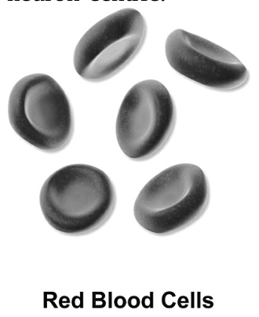
Một phần điều khiến hệ thần kinh trở nên đặc biệt đến vậy là bản thân các neuron rất khác biệt với tư cách là tế bào. Các tế bào thường là những thực thể nhỏ, khép kín—hãy xem xét những tế bào hồng cầu tròn nhỏ bé:
Ngược lại, neuron là những quái vật bất đối xứng cao độ, thuôn dài, thường có các nhánh tua tủa mọc ra khắp nơi:
Những nhánh này có thể phát triển phức tạp đến mức điên rồ. Hãy xem xét một neuron đơn lẻ này, được vẽ vào đầu thế kỷ XX bởi một trong những vị thần của lĩnh vực này, Santiago Ramón y Cajal:
Nó giống như cành của một cái cây mọc cuồng dại, giải thích cho thuật ngữ chuyên môn rằng đây là một neuron “phân nhánh cây” (arborized) dày đặc.
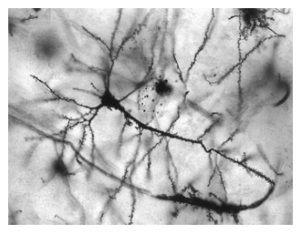
Nhiều neuron cũng to lớn đến mức kỳ cục. Hàng tỷ tỷ tế bào hồng cầu có thể nằm gọn trên dấu chấm câu ở cuối câu này. Ngược lại, có những neuron đơn lẻ trong tủy sống phóng ra những sợi cáp dẫn truyền dài nhiều feet. Có những neuron tủy sống ở cá voi xanh dài bằng một nửa chiều dài của sân bóng rổ.
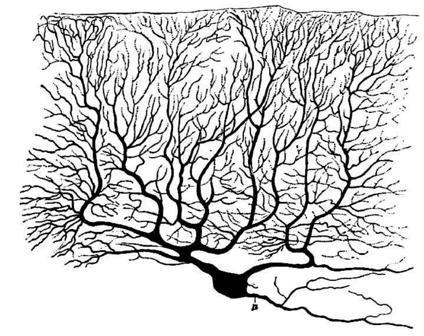
Giờ hãy nói về các bộ phận cấu thành một neuron, chìa khóa để hiểu chức năng của nó. Việc mà các neuron làm là trò chuyện với nhau, khiến nhau trở nên hưng phấn. Ở một đầu của neuron là đôi tai ẩn dụ của nó, những nhánh chuyên biệt tiếp nhận thông tin từ một neuron khác. Ở đầu kia là những nhánh đóng vai trò cái miệng, giao tiếp với neuron tiếp theo trong hàng.
Đôi tai, tức đầu vào, được gọi là sợi nhánh (dendrite). Đầu ra bắt đầu bằng một sợi cáp dài đơn độc gọi là sợi trục (axon), sau đó phân nhánh thành các đầu tận cùng sợi trục—những tận cùng sợi trục này chính là cái miệng (tạm thời bỏ qua bao myelin nhé). Các tận cùng sợi trục đó kết nối với sợi nhánh của neuron tiếp theo trong hàng. Nhờ vậy, đôi tai sợi nhánh của một neuron được thông báo rằng neuron phía sau nó đang hưng phấn. Dòng thông tin sau đó quét từ sợi nhánh đến thân tế bào, tới sợi trục, đến các tận cùng sợi trục, rồi được truyền sang neuron tiếp theo.
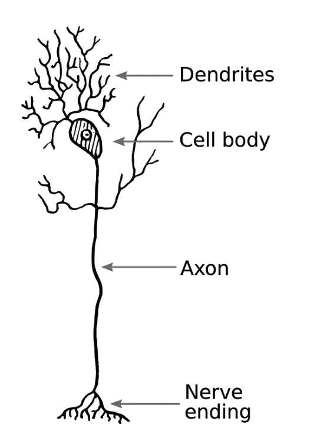
Hãy dịch “dòng thông tin” sang ngôn ngữ bán hóa học. Thực chất cái gì đi từ sợi nhánh đến tận cùng sợi trục? Một làn sóng kích thích điện. Bên trong neuron có nhiều ion mang điện tích dương và âm khác nhau. Ngay bên ngoài màng neuron là những ion mang điện tích dương và âm khác. Khi một neuron nhận được tín hiệu kích thích từ neuron trước đó tại đầu một sợi nhánh đơn lẻ, các kênh trên màng của sợi nhánh đó mở ra, cho phép các ion khác nhau chảy vào và những ion khác chảy ra, và kết quả ròng là bên trong đầu sợi nhánh đó trở nên tích điện dương hơn. Điện tích lan truyền về phía tận cùng sợi trục, nơi nó được truyền sang neuron tiếp theo. Phần hóa học chỉ có thế thôi.
Hai chi tiết cực kỳ quan trọng:
Điện thế nghỉ. Khi một neuron nhận được thông điệp kích thích cực mạnh từ neuron đứng trước, bên trong nó có thể trở nên tích điện dương hơn so với khoảng không gian ngoại bào xung quanh. Quay lại phép ẩn dụ ban nãy—neuron lúc này có điều muốn nói và đang gào thét hết cỡ. Vậy mọi thứ trông như thế nào khi neuron chẳng có gì để nói, khi chưa bị kích thích? Có lẽ là một trạng thái cân bằng, nơi bên trong và bên ngoài có điện tích bằng nhau, trung hòa chăng?* Không, không bao giờ! Trạng thái đó chỉ đủ tốt cho một tế bào nào đó ở lá lách hoặc ngón chân cái của bạn thôi. Nhưng quay lại vấn đề cốt lõi kia, rằng neuron là tất cả về sự tương phản. Khi một neuron chẳng có gì để nói, đó không phải là một trạng thái thụ động để mọi thứ tự trôi tuột về số không. Thay vào đó, nó là một quá trình chủ động. Một quá trình chủ động, có chủ đích, mạnh mẽ, cơ bắp và đầy mồ hôi. Thay vì trạng thái “tôi chẳng có gì để nói” là trạng thái trung hòa điện tích, bên trong neuron lại tích điện âm so với bên ngoài.
Bạn không thể đòi hỏi một sự tương phản kịch tính hơn thế: Tôi chẳng có gì để nói = bên trong neuron tích điện âm. Tôi có điều muốn nói = bên trong tích điện dương. Không neuron nào từng nhầm lẫn giữa hai trạng thái này. Trạng thái âm bên trong được gọi là “điện thế nghỉ”. Trạng thái hưng phấn được gọi là “điện thế hoạt động”. Và tại sao việc tạo ra điện thế nghỉ đầy kịch tính này lại là một quá trình chủ động đến vậy? Bởi vì các neuron phải làm việc điên cuồng, sử dụng nhiều loại bơm khác nhau trên màng tế bào để đẩy một số ion mang điện tích dương ra ngoài và giữ một số ion mang điện tích âm ở lại bên trong, tất cả nhằm tạo ra trạng thái nghỉ âm bên trong đó. Khi có một tín hiệu kích thích ập đến; các bơm ngừng hoạt động, các kênh mở ra, và các ion tràn qua tràn lại để tạo ra điện tích dương kích thích bên trong. Và khi làn sóng kích thích đó đi qua, các kênh đóng lại và các bơm lại bắt tay vào hoạt động, tái tạo lại điện thế nghỉ âm đó. Đáng kinh ngạc là các neuron tiêu tốn gần một nửa năng lượng của chúng chỉ cho các bơm tạo ra điện thế nghỉ. Không hề rẻ chút nào để tạo ra sự tương phản kịch tính giữa việc chẳng có gì để nói và việc có một tin tức thú vị.
Giờ khi đã hiểu điện thế nghỉ và điện thế hoạt động, hãy chuyển sang chi tiết cực kỳ quan trọng thứ hai:
Thực ra điện thế hoạt động không diễn ra như thế. Những gì tôi vừa phác thảo là một sợi nhánh đơn lẻ nhận được tín hiệu kích thích từ neuron trước đó (tức là neuron trước đã có điện thế hoạt động); điều này tạo ra một điện thế hoạt động trong sợi nhánh đó, lan truyền về phía thân tế bào, đi qua thân, lên sợi trục, tới tận cùng sợi trục và báo hiệu cho neuron tiếp theo. Không đúng. Thay vào đó:
Neuron đang ngồi đó chẳng có gì để nói, tức là đang duy trì điện thế nghỉ; toàn bộ bên trong nó tích điện âm. Chợt một tín hiệu kích thích ập đến tại một sợi nhánh đơn lẻ đó, phát xuất từ neuron đứng trước. Kết quả là các kênh mở ra và các ion chảy vào và ra khỏi một sợi nhánh đó. Nhưng chỉ một chút thôi. Không đủ để làm toàn bộ bên trong neuron tích điện dương, mà chỉ làm cho bên trong sợi nhánh đó bớt âm đi một chút (chỉ để gắn thêm vài con số không hề quan trọng vào đây, điện thế nghỉ dịch chuyển từ khoảng –70 milivôn lên khoảng –60 milivôn). Sau đó các kênh đóng lại. Cái nấc nhẹ của việc trở nên bớt âm hơn* lan rộng lên phía trên thân của sợi nhánh đó. Các bơm đã bắt đầu hoạt động, bơm các ion trở lại nơi chúng xuất phát ban đầu. Vì vậy, tại đầu mút của sợi nhánh đó, điện tích đi từ –70 lên –60 mV. Nhưng nhích lên một chút trên thân sợi nhánh, mọi thứ chỉ đi từ –70 lên –65 mV. Xa hơn nữa lên phía trên, từ –70 lên –69. Nói cách khác, tín hiệu kích thích đó bị tiêu tán. Bạn vừa lấy một mặt hồ êm ả phẳng lặng, ở trạng thái nghỉ, và ném một viên sỏi nhỏ vào. Nó tạo ra một gợn sóng nhỏ ngay tại đó, lan ra ngoài, nhỏ dần về biên độ, cho đến khi tiêu tán cách nơi viên sỏi rơi không xa. Và cách đó hàng dặm, tại đầu sợi trục của hồ, gợn sóng kích thích đó chẳng có bất kỳ tác động nào cả.
Nói cách khác, nếu chỉ một sợi nhánh đơn lẻ bị kích thích, điều đó không đủ để truyền sự kích thích xuống đầu sợi trục và sang neuron tiếp theo. Vậy làm thế nào một thông điệp có thể được truyền đi? Hãy quay lại bức vẽ tuyệt vời về một neuron của Cajal ở trên.
Mạng lưới phân nhánh cây gồm các cành sợi nhánh chẻ đôi đó kết thúc bằng vô số đầu sợi nhánh (đến lúc giới thiệu thuật ngữ thường dùng: “kết thúc bằng vô số gai sợi nhánh”). Và để có đủ sự kích thích quét từ đầu sợi nhánh của neuron sang đầu sợi trục, bạn phải có sự cộng gộp—cùng một gai phải bị kích thích lặp đi lặp lại và/hoặc, phổ biến hơn, một loạt các gai sợi nhánh phải bị kích thích cùng một lúc. Bạn không thể tạo ra một con sóng, thay vì chỉ là một gợn sóng, trừ khi bạn ném vào rất nhiều viên sỏi.
Tại gốc của sợi trục, nơi nó nhô ra từ thân tế bào, có một bộ phận chuyên biệt (gọi là “gò sợi trục”). Nếu tất cả những đầu vào sợi nhánh được cộng gộp đó tạo ra đủ gợn sóng để đẩy điện thế nghỉ quanh gò sợi trục từ –70 mV lên khoảng –40 mV, một ngưỡng sẽ bị vượt qua. Và một khi điều đó xảy ra, mọi thứ bùng nổ dữ dội. Một loại kênh khác mở ra trên màng của gò sợi trục, cho phép một sự di cư ồ ạt của các ion, cuối cùng tạo ra một điện tích dương (khoảng 30 mV). Nói cách khác, một điện thế hoạt động. Sau đó nó mở ra chính loại kênh đó ở mẩu màng sợi trục kế tiếp, tái tạo lại điện thế hoạt động tại đó, rồi mẩu tiếp theo, và tiếp theo nữa, suốt dọc xuống tận cùng sợi trục.
Xét trên phương diện thông tin, một neuron có hai loại hệ thống truyền tín hiệu khác nhau. Từ các gai sợi nhánh đến điểm khởi đầu của gò sợi trục, đó là tín hiệu tương tự (analogue), với các mức độ tín hiệu tiêu tán theo không gian và thời gian. Và từ gò sợi trục đến các tận cùng sợi trục, đó là một hệ thống kỹ thuật số (digital) với cơ chế truyền tín hiệu tất-cả-hoặc-không-có-gì tự tái tạo dọc theo chiều dài sợi trục.
Hãy thử đưa vào vài con số tưởng tượng. Giả sử một neuron trung bình có khoảng một trăm gai sợi nhánh và khoảng một trăm tận cùng sợi trục. Điều này có ý nghĩa gì trong bối cảnh đặc tính tương tự/kỹ thuật số của neuron?
Đôi khi chẳng có gì thú vị. Hãy xét neuron A, như vừa giới thiệu, có một trăm tận cùng sợi trục. Mỗi tận cùng kết nối với một trong các gai sợi nhánh của neuron tiếp theo trong hàng, neuron B. Neuron A có một điện thế hoạt động, lan truyền xuống toàn bộ một trăm tận cùng sợi trục của nó, kích thích toàn bộ một trăm gai sợi nhánh ở neuron B. Ngưỡng tại gò sợi trục của neuron B đòi hỏi năm mươi sợi nhánh phải bị kích thích cùng một lúc để tạo ra một điện thế hoạt động; do đó, với toàn bộ một trăm sợi nhánh đều phát xung, neuron B chắc chắn sẽ có một điện thế hoạt động.
Giờ thì, thay vào đó, neuron A phóng một nửa số tận cùng sợi trục của nó tới neuron B và một nửa tới neuron C. Nó có một điện thế hoạt động; điều đó có đảm bảo một điện thế hoạt động ở neuron B và C không? Có. Gò sợi trục của mỗi neuron đó có ngưỡng cần tín hiệu từ năm mươi viên sỏi sợi nhánh cùng lúc để tạo ra điện thế hoạt động.
Giờ thì, thay vào đó, neuron A phân bổ đều các tận cùng sợi trục của nó cho mười neuron đích khác nhau, từ neuron B đến K. Điện thế hoạt động của nó có tạo ra điện thế hoạt động ở các neuron đích không? Không đời nào—tiếp tục ví dụ của chúng ta, lượng sỏi tương đương mười gai sợi nhánh ở mỗi neuron đích thấp hơn rất nhiều so với ngưỡng năm mươi viên sỏi.
Vậy điều gì sẽ bao giờ gây ra được điện thế hoạt động ở, chẳng hạn, neuron K, vốn chỉ có mười gai sợi nhánh nhận tín hiệu kích thích từ neuron A? Chà, điều gì đang diễn ra với chín mươi gai sợi nhánh còn lại của nó? Chúng đang nhận đầu vào từ các neuron khác—chín neuron khác, với mười đầu vào từ mỗi neuron. Khi nào thì neuron B có điện thế hoạt động? Khi ít nhất một nửa số neuron phóng chiếu tới nó có điện thế hoạt động. Nói cách khác, bất kỳ neuron nào cũng tích hợp các đầu vào từ tất cả các neuron phóng chiếu tới nó. Và từ đây rút ra một quy luật: neuron A phóng chiếu tới càng nhiều neuron, theo định nghĩa, nó càng có thể tác động tới nhiều neuron hơn; tuy nhiên, nó phóng chiếu tới càng nhiều neuron, ảnh hưởng trung bình của nó tại mỗi neuron đích đó sẽ càng nhỏ đi. Có một sự đánh đổi.
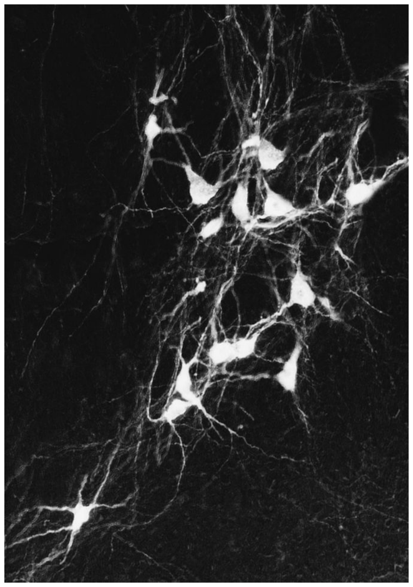
Điều này không quan trọng ở tủy sống, nơi một neuron thường gửi toàn bộ các nhánh phóng chiếu của nó tới neuron kế tiếp trong hàng. Nhưng trong não bộ, một neuron sẽ phân tán các nhánh phóng chiếu của nó tới hàng tá neuron khác và nhận đầu vào từ hàng tá neuron khác, với gò sợi trục của mỗi neuron quyết định xem ngưỡng có đạt được và một điện thế hoạt động có được tạo ra hay không. Não bộ được nối dây thành các mạng lưới truyền tín hiệu phân kỳ và hội tụ.
— Giờ hãy đưa vào một con số thực tế gây sửng sốt—neuron trung bình của bạn có khoảng mười nghìn gai sợi nhánh và khoảng ngần ấy tận cùng sợi trục. Nhân thêm một trăm tỷ neuron nữa, và bạn sẽ thấy tại sao não bộ, chứ không phải thận, mới viết nên thơ ca.
Chỉ để cho trọn vẹn, đây là một vài sự thật cuối cùng. Các neuron có thêm một số mánh khóe, ở cuối một điện thế hoạt động, để tăng cường hơn nữa sự tương phản giữa chẳng có gì để nói/có điều muốn nói, hai cách để kết thúc điện thế hoạt động thật nhanh và kịch tính: một thứ gọi là chỉnh lưu chậm (delayed rectification) và một thứ khác gọi là giai đoạn trơ tăng phân cực (hyperpolarized refractory period). Một chi tiết nhỏ khác từ sơ đồ trên—một loại tế bào thần kinh đệm quấn quanh sợi trục, tạo thành một lớp cách điện gọi là bao myelin; quá trình “myelin hóa” này khiến điện thế hoạt động bắn dọc xuống sợi trục nhanh hơn.
Và một chi tiết cuối cùng có tầm quan trọng lớn về sau: ngưỡng của gò sợi trục có thể thay đổi theo thời gian, từ đó làm thay đổi tính dễ kích thích của neuron. Những thứ gì làm thay đổi ngưỡng? Hormone, tình trạng dinh dưỡng, trải nghiệm, và những yếu tố khác lấp đầy các trang của cuốn sách này.
Chúng ta giờ đã đi được từ đầu này sang đầu kia của một neuron. Chính xác thì một neuron đang có điện thế hoạt động truyền đạt sự hưng phấn của nó sang neuron tiếp theo trong hàng bằng cách nào?
HAI NEURON CÙNG LÚC: GIAO TIẾP QUA SYNAPSE
N
hư vậy một điện thế hoạt động đã được kích hoạt tại gò sợi trục ở neuron A và quét xuống toàn bộ mười nghìn tận cùng sợi trục. Sự kích thích này được truyền sang (các) neuron tiếp theo như thế nào?
Thất bại của phe Hợp bào
Đối với một nhà khoa học thần kinh trung bình ở thế kỷ XIX, câu trả lời rất dễ dàng. Giải thích của họ sẽ là não bộ thai nhi được tạo thành từ số lượng khổng lồ các neuron riêng lẻ dần dần mọc ra các sợi nhánh và sợi trục. Và cuối cùng các tận cùng sợi trục của một neuron vươn tới và chạm vào các gai sợi nhánh của (các) neuron tiếp theo, và chúng hòa nhập lại, tạo thành một màng liên tục giữa hai tế bào. Từ tất cả các neuron thai nhi riêng lẻ đó, não bộ trưởng thành hình thành nên mạng lưới liên tục, vô cùng phức tạp gồm một siêu neuron duy nhất, được gọi là “hợp bào” (synctitium). Nhờ vậy sự kích thích dễ dàng chảy từ neuron này sang neuron khác vì chúng thực sự không phải là những neuron tách biệt.
Cuối thế kỷ XIX, một quan điểm thay thế xuất hiện, cụ thể là mỗi neuron vẫn là một đơn vị độc lập, và các tận cùng sợi trục của một neuron thực chất không chạm vào các gai sợi nhánh của neuron tiếp theo. Thay vào đó có một khe hở tí hon giữa hai bên. Ý niệm này được gọi là “học thuyết neuron”.
Những người ủng hộ trường phái hợp bào nghĩ rằng học thuyết neuron thật ngu xuẩn. “Hãy chỉ cho tôi thấy các khe hở giữa tận cùng sợi trục và gai sợi nhánh,” họ chất vấn những kẻ dị giáo này, “và nói cho tôi biết sự kích thích nhảy từ neuron này sang neuron khác bằng cách nào.”
Và rồi vào năm 1873 mọi chuyện được giải quyết bởi nhà khoa học thần kinh người Ý Camillo Golgi, người đã phát minh ra một kỹ thuật nhuộm mô não theo một phương pháp mới lạ. Và Cajal vừa nhắc đến ở trên đã sử dụng “phép nhuộm Golgi” này để nhuộm toàn bộ các nhánh, mọi cành lớn cành nhỏ và chồi non của sợi nhánh và tận cùng sợi trục của từng neuron đơn lẻ. Điều cốt yếu là thuốc nhuộm không lan từ neuron này sang neuron khác. Không hề có một mạng lưới liên tục, hợp nhất của một siêu neuron duy nhất. Từng neuron là những thực thể rời rạc. Những người theo học thuyết neuron đã đánh bại phe hợp bào.*
Hoan hô, vụ án khép lại; thực sự có những khe hở siêu-siêu hiển vi giữa tận cùng sợi trục và gai sợi nhánh; những khe hở này được gọi là “khớp thần kinh” (synapse) (mà mãi đến khi kính hiển vi điện tử được phát minh vào thập niên 1950 người ta mới quan sát trực tiếp được, đóng chiếc đinh cuối cùng vào cỗ quan tài của thuyết hợp bào). Nhưng vẫn còn vấn đề làm thế nào sự kích thích lan truyền từ neuron này sang neuron khác, nhảy qua khe synapse.
Câu trả lời, mà việc theo đuổi nó đã thống trị khoa học thần kinh vào giữa thế kỷ XX, là sự kích thích điện không nhảy qua khe synapse. Thay vào đó, nó được dịch sang một loại tín hiệu khác.
Chất dẫn truyền thần kinh
Nằm bên trong mỗi tận cùng sợi trục, neo vào màng tế bào, là những quả bóng nhỏ gọi là túi synap (vesicle), chứa đầy nhiều bản sao của một sứ giả hóa học. Khi điện thế hoạt động vốn được khởi phát cách đó hàng dặm ở gò sợi trục của neuron ập đến, nó quét qua tận cùng và kích hoạt việc giải phóng các sứ giả hóa học đó vào khe synapse. Chúng trôi qua khe, chạm tới gai sợi nhánh ở phía bên kia, nơi chúng kích thích neuron đó. Những sứ giả hóa học này được gọi là chất dẫn truyền thần kinh.
Làm thế nào các chất dẫn truyền thần kinh, được giải phóng từ phía “tiền synapse” của khớp thần kinh, lại gây ra sự kích thích ở gai sợi nhánh “hậu synapse”? Nằm trên màng của gai sợi nhánh là các thụ thể dành cho chất dẫn truyền thần kinh. Đến lúc giới thiệu một trong những sáo ngữ kinh điển nhất của sinh học. Phân tử chất dẫn truyền thần kinh có một hình dạng đặc trưng (với mỗi bản sao của phân tử đều có hình dạng giống hệt nhau). Thụ thể có một túi gắn kết với hình dạng đặc trưng hoàn toàn khớp bổ sung với hình dạng của chất dẫn truyền thần kinh. Và do đó chất dẫn truyền thần kinh—đến giờ sáo ngữ rồi—khớp vào thụ thể giống như chìa khóa tra vào ổ khóa. Không phân tử nào khác khớp khít vào thụ thể đó; phân tử chất dẫn truyền thần kinh cũng sẽ không khớp khít vào bất kỳ loại thụ thể nào khác. Chất dẫn truyền thần kinh gắn vào thụ thể, kích hoạt mở các kênh kia, và các dòng kích thích ion bắt đầu diễn ra trong gai sợi nhánh.
Điều này mô tả sự giao tiếp “xuyên synapse” bằng các chất dẫn truyền thần kinh. Trừ một chi tiết: chuyện gì xảy ra với các phân tử chất dẫn truyền thần kinh sau khi chúng gắn vào thụ thể? Chúng không gắn mãi mãi—hãy nhớ rằng điện thế hoạt động diễn ra trong khoảng một phần nghìn giây. Thay vào đó chúng tách khỏi thụ thể, và tại thời điểm đó các chất dẫn truyền thần kinh phải được dọn dẹp. Việc này diễn ra theo một trong hai cách. Thứ nhất, đối với khớp thần kinh có ý thức bảo vệ sinh thái, có các “bơm tái hấp thu” trên màng của tận cùng sợi trục. Chúng thu hồi các chất dẫn truyền thần kinh và tái chế chúng, đưa chúng trở lại vào các túi tiết để sử dụng lại.* Lựa chọn thứ hai là chất dẫn truyền thần kinh bị phân hủy ngay trong khe synapse bởi một enzyme, với các sản phẩm phân hủy bị tống ra biển (tức là môi trường ngoại bào, và từ đó đi vào dịch não tủy, dòng máu, và cuối cùng là bàng quang).
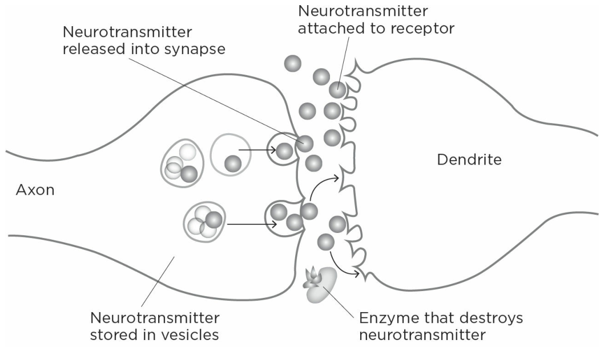
Những bước dọn dẹp này vô cùng quan trọng. Giả sử bạn muốn tăng cường lượng tín hiệu chất dẫn truyền thần kinh qua một khớp thần kinh. Hãy dịch điều đó sang ngôn ngữ kích thích của phần trước—bạn muốn tăng tính dễ kích thích qua khớp thần kinh, sao cho một điện thế hoạt động ở neuron tiền synapse có sức nặng hơn ở neuron hậu synapse, nghĩa là làm tăng khả năng gây ra một điện thế hoạt động ở neuron thứ hai đó. Bạn có thể tăng lượng chất dẫn truyền thần kinh được giải phóng—neuron tiền synapse hét to hơn. Hoặc bạn có thể tăng số lượng thụ thể trên gai sợi nhánh—neuron hậu synapse lắng nghe thính hơn.
Nhưng như một khả năng khác, bạn có thể làm giảm hoạt động của bơm tái hấp thu. Kết quả là, ít chất dẫn truyền thần kinh bị dọn khỏi khe synapse hơn. Do đó nó lưu lại lâu hơn và gắn vào các thụ thể lặp đi lặp lại, khuếch đại tín hiệu. Hoặc, tương đương về mặt khái niệm, bạn có thể làm giảm hoạt động của enzyme phân hủy; ít chất dẫn truyền thần kinh bị bẻ gãy hơn, nên nhiều chất lưu lại lâu hơn trong khe synapse, tạo ra tác động mạnh mẽ hơn. Như chúng ta đã thấy, một số phát hiện thú vị nhất giúp giải thích những khác biệt cá nhân trong các hành vi mà chúng ta quan tâm trong cuốn sách này đều liên quan đến lượng chất dẫn truyền thần kinh được tạo ra và giải phóng, cũng như số lượng và chức năng của các thụ thể, bơm tái hấp thu và enzyme phân hủy.
Các loại chất dẫn truyền thần kinh
Vậy phân tử chất dẫn truyền thần kinh thần thoại này, thứ được giải phóng bởi các điện thế hoạt động từ tận cùng sợi trục của toàn bộ một trăm tỷ neuron, là gì? Đây là chỗ mọi thứ trở nên phức tạp, bởi vì có nhiều hơn một loại chất dẫn truyền thần kinh.
Tại sao lại nhiều hơn một? Điều tương tự xảy ra ở mọi khớp thần kinh, đó là chất dẫn truyền thần kinh gắn vào thụ thể chìa-khóa-trong-ổ-khóa của nó và kích hoạt việc mở các kênh khác nhau cho phép các ion chảy qua và làm cho bên trong gai sợi nhánh bớt âm hơn một chút.
Một lý do là các chất dẫn truyền thần kinh khác nhau gây khử cực ở các mức độ khác nhau—nói cách khác, một số có tác dụng kích thích mạnh hơn những chất khác—và trong những khoảng thời gian khác nhau. Điều này cho phép sự phức tạp lớn hơn nhiều trong thông tin được truyền từ neuron này sang neuron khác.
Và giờ để nhân đôi kích thước bảng màu của chúng ta, có một số chất dẫn truyền thần kinh không gây khử cực, không làm tăng khả năng neuron tiếp theo trong hàng có điện thế hoạt động. Chúng làm điều ngược lại—chúng “tăng phân cực” gai sợi nhánh, mở ra các loại kênh khác khiến điện thế nghỉ thậm chí còn âm hơn nữa (ví dụ: dịch chuyển từ –70 mV xuống –80 mV). Nói cách khác, có tồn tại thứ gọi là chất dẫn truyền thần kinh ức chế. Bạn có thể thấy điều đó vừa làm mọi thứ phức tạp thêm thế nào—một neuron với mười nghìn gai sợi nhánh của nó đang nhận các đầu vào kích thích với cường độ khác nhau từ nhiều neuron, nhận các đầu vào ức chế từ những neuron khác, và tích hợp tất cả những thứ này tại gò sợi trục.
Do đó có rất nhiều nhóm chất dẫn truyền thần kinh khác nhau, mỗi loại gắn vào một vị trí thụ thể độc nhất có hình dạng bổ sung cho nó. Liệu có một loạt các loại chất dẫn truyền thần kinh khác nhau trong mỗi tận cùng sợi trục, để một điện thế hoạt động kích hoạt việc giải phóng cả một bản giao hưởng tín hiệu không? Đây là lúc chúng ta viện đến Nguyên lý Dale, đặt theo tên Henry Dale, một trong những bậc đại thụ của lĩnh vực này, người vào thập niên 1930 đã đề xuất một quy tắc mà tính đúng đắn của nó tạo nên cốt lõi cho cảm giác an tâm của mọi nhà khoa học thần kinh: một điện thế hoạt động giải phóng cùng một loại chất dẫn truyền thần kinh từ tất cả các tận cùng sợi trục của một neuron. Do đó sẽ có một hồ sơ hóa học thần kinh đặc trưng cho một neuron cụ thể—“Ồ, neuron đó là neuron loại chất dẫn truyền thần kinh A. Và điều đó cũng có nghĩa là những neuron mà nó trò chuyện cùng có thụ thể chất dẫn truyền thần kinh A trên các gai sợi nhánh của chúng.”*
Có hàng tá chất dẫn truyền thần kinh đã được xác định. Một số cái tên lừng lẫy nhất: serotonin, norepinephrine, dopamine, acetylcholine, glutamate (chất dẫn truyền thần kinh kích thích mạnh nhất trong não), và GABA (chất ức chế mạnh nhất). Chính tại điểm này mà sinh viên y khoa bị tra tấn với hàng tá chi tiết dài dằng dặc về cách mỗi chất dẫn truyền thần kinh được tổng hợp—tiền chất của nó, các dạng trung gian mà tiền chất được chuyển hóa thành cho đến khi cuối cùng đạt được chất thật, những cái tên dài đau đớn của các loại enzyme xúc tác cho các quá trình tổng hợp đó. Giữa mớ hỗn độn đó có một vài quy tắc khá đơn giản xoay quanh ba điểm:
a. Bạn không bao giờ muốn thấy mình đang chạy bán sống bán chết khỏi một con sư tử và, ôi thôi, các neuron ra lệnh cho cơ bắp bạn chạy nhanh lại ngừng hoạt động vì chúng đã cạn sạch chất dẫn truyền thần kinh. Do đó các chất dẫn truyền thần kinh được tạo ra từ những tiền chất dồi dào; thường chúng là những thành phần dinh dưỡng đơn giản. Ví dụ, serotonin và dopamine được tạo ra từ các axit amin trong chế độ ăn uống là tryptophan và tyrosine, tương ứng. Acetylcholine được tạo ra từ choline và lecithin trong thực phẩm. b. Một neuron có khả năng phát ra hàng tá điện thế hoạt động mỗi giây. Mỗi lần như vậy đòi hỏi phải nạp đầy lại các túi synap bằng chất dẫn truyền thần kinh mới, giải phóng chúng và dọn dẹp sau đó. Vì lẽ đó, bạn không muốn chất dẫn truyền thần kinh của mình là những phân tử khổng lồ, phức tạp, cầu kỳ, mà mỗi phân tử đòi hỏi nhiều thế hệ thợ đá mới đẽo gọt xong. Thay vào đó, tất cả chúng đều được tạo ra chỉ qua một số ít bước từ tiền chất. Chúng rẻ và dễ sản xuất. Ví dụ, chỉ mất hai bước tổng hợp đơn giản để biến tyrosine thành dopamine. c. Cuối cùng, để hoàn thiện khuôn mẫu tổng hợp chất dẫn truyền thần kinh vừa rẻ vừa dễ này, nhiều chất dẫn truyền thần kinh có thể được tạo ra từ cùng một tiền chất. Chẳng hạn, ở các neuron sử dụng dopamine làm chất dẫn truyền thần kinh, có hai enzyme thực hiện hai bước lắp ráp đó. Trong khi đó, ở các neuron giải phóng norepinephrine có thêm một enzyme bổ sung chuyển hóa dopamine thành norepinephrine.
Rẻ, rẻ, rẻ. Điều này hoàn toàn hợp lý. Không thứ gì trở nên lỗi thời nhanh hơn một chất dẫn truyền thần kinh sau khi nó đã hoàn thành nhiệm vụ hậu synapse của mình. Tờ báo ngày hôm qua hôm nay chỉ hữu ích để lót cho chó con đi vệ sinh đúng chỗ.
Dược lý học thần kinh
Khi những hiểu biết sâu sắc về chất dẫn truyền thần kinh học này xuất hiện, chúng cho phép các nhà khoa học bắt đầu hiểu được cách các loại thuốc và dược phẩm “tác động lên thần kinh” và “tác động lên tâm thần” khác nhau hoạt động.
Nhìn chung, những loại thuốc như vậy rơi vào hai nhóm: những thuốc làm tăng tín hiệu qua một loại khớp thần kinh cụ thể, và những thuốc làm giảm nó. Chúng ta đã thấy một số chiến lược để làm tăng tín hiệu: (a) Kích thích tổng hợp nhiều chất dẫn truyền thần kinh hơn (ví dụ, bằng cách đưa vào tiền chất hoặc sử dụng một loại thuốc làm tăng hoạt tính của các enzyme tổng hợp chất dẫn truyền thần kinh). Chẳng hạn, bệnh Parkinson liên quan đến sự mất hụt dopamine ở một vùng não, và một phương pháp điều trị chủ lực là tăng mức dopamine bằng cách cho dùng thuốc L-DOPA, vốn là tiền chất trực tiếp của dopamine. (b) Đưa vào một phiên bản tổng hợp của chất dẫn truyền thần kinh, hoặc một loại thuốc có cấu trúc đủ giống với chất thật để đánh lừa các thụ thể. Psilocybin, chẳng hạn, có cấu trúc tương tự serotonin và kích hoạt một phân nhóm thụ thể của nó. (c) Kích thích neuron hậu synapse tạo ra nhiều thụ thể hơn. Về lý thuyết thì hay, nhưng không dễ thực hiện. (d) Ức chế các enzyme phân hủy để nhiều chất dẫn truyền thần kinh lưu lại trong khe synapse hơn. (e) Ức chế sự tái hấp thu chất dẫn truyền thần kinh, kéo dài tác dụng của nó trong khe synapse. Loại thuốc chống trầm cảm hiện đại được ưa chuộng, Prozac, làm chính xác điều đó tại các khớp thần kinh serotonin. Do đó nó thường được gọi là một “SSRI”—chất ức chế tái hấp thu serotonin có chọn lọc.
Trong khi đó, có cả một kho dược điển các loại thuốc giúp làm giảm tín hiệu qua khớp thần kinh, và bạn có thể thấy các cơ chế nền tảng của chúng sẽ bao gồm—chặn sự tổng hợp một chất dẫn truyền thần kinh, chặn sự giải phóng của nó, chặn đường tiếp cận thụ thể của nó, v.v. Ví dụ vui:
Acetylcholine kích thích cơ hoành của bạn co lại. Curare, loại độc dược được các bộ lạc Amazon tẩm vào phi tiêu, chặn các thụ thể acetylcholine. Bạn ngừng thở.
Một điểm cuối cùng, rất liên quan—cũng giống như ngưỡng của gò sợi trục có thể thay đổi theo thời gian để đáp ứng với trải nghiệm, hầu như mọi khía cạnh trong bộ máy vận hành của chất dẫn truyền thần kinh học cũng đều có thể bị thay đổi bởi trải nghiệm.
NHIỀU HƠN HAI NEURON CÙNG LÚC
C
húng ta giờ đây đã thắng lợi tiến tới mức suy nghĩ về ba neuron cùng một lúc. Và chỉ trong không quá nhiều trang nữa, chúng ta sẽ bung xõa và xem xét thậm chí nhiều hơn ba. Mục đích của phần này là để thấy các mạch neuron hoạt động như thế nào, bước trung gian trước khi khảo sát xem toàn bộ các vùng não có liên quan gì đến những hành vi tốt đẹp nhất và tệ hại nhất của chúng ta. Do đó, các ví dụ ở đây được chọn chỉ để mang lại một chút hương vị về cách mọi thứ vận hành ở cấp độ này.
Điều biến thần kinh
Hãy xem xét sơ đồ sau:
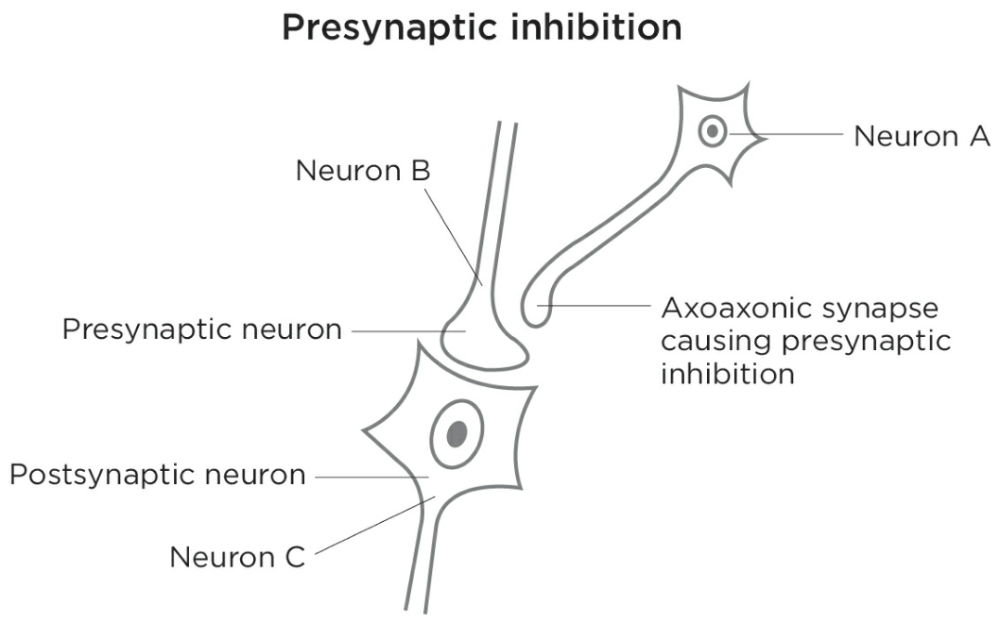
Tận cùng sợi trục của neuron B tạo thành một khớp thần kinh với gai sợi nhánh của neuron hậu synapse (hãy gọi nó là neuron C) và giải phóng một chất dẫn truyền thần kinh kích thích. Chuyện bình thường. Trong khi đó, neuron A gửi một nhánh tận cùng sợi trục tới neuron B. Nhưng không phải tới một chỗ bình thường là gai sợi nhánh. Thay vào đó, tận cùng sợi trục của nó tạo khớp thần kinh ngay trên tận cùng sợi trục của neuron B.
Chuyện gì xảy ra ở đây? Neuron A giải phóng chất dẫn truyền thần kinh ức chế GABA, chất này trôi qua khớp thần kinh “trục-trục” (axoaxonic) đó và gắn vào các thụ thể ở phía đó của tận cùng sợi trục neuron B. Và một tác dụng ức chế như vậy (tức là làm cho điện thế nghỉ –70 mV trở nên âm hơn nữa) sẽ dập tắt bất kỳ điện thế hoạt động nào đang lao xuống nhánh sợi trục đó, ngăn không cho nó đi tới tận cùng và giải phóng chất dẫn truyền thần kinh; theo thuật ngữ chuyên ngành, neuron A đang tạo ra một tác động điều biến thần kinh (neuromodulatory) lên neuron B.
Làm sắc nét tín hiệu theo thời gian và không gian
Giờ là một loại mạch mới. Để phù hợp với phần này, tôi đang sử dụng một cách biểu diễn neuron đơn giản hơn. Như được vẽ trong sơ đồ, neuron A gửi toàn bộ các nhánh sợi trục của nó tới neuron B và giải phóng một chất dẫn truyền thần kinh kích thích, được ký hiệu bằng dấu cộng. Vòng tròn ở neuron B đại diện cho thân tế bào cộng với tất cả các sợi nhánh.
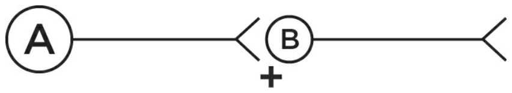
Giờ hãy xem xét mạch tiếp theo. Neuron A kích thích neuron B, như thường lệ. Ngoài ra, nó cũng kích thích neuron C. Điều này rất phổ biến, với việc neuron A chia các nhánh sợi trục của mình giữa hai tế bào đích, kích thích cả hai. Và neuron C làm gì? Nó gửi một nhánh ức chế ngược lại lên neuron A, tạo thành một vòng phản hồi âm. Quay lại việc não bộ yêu thích sự tương phản, tràn đầy năng lượng gào thét hết cỡ khi có điều muốn nói, và tràn đầy năng lượng im lặng khi không có gì. Đây là một cấp độ vĩ mô hơn của cùng nguyên lý đó. Neuron A bắn ra một loạt điện thế hoạt động. Còn cách nào tốt hơn để truyền đạt một cách đầy năng lượng rằng mọi chuyện đã kết thúc hơn là trở nên im lặng triệt để, nhờ vào vòng phản hồi? Đó là một phương thức làm sắc nét tín hiệu theo thời gian.* Và lưu ý rằng neuron A có thể “quyết định” tín hiệu phản hồi âm đó mạnh đến mức nào bằng việc nó rẽ bao nhiêu trong số mười nghìn tận cùng sợi trục của mình về phía neuron C thay vì B.
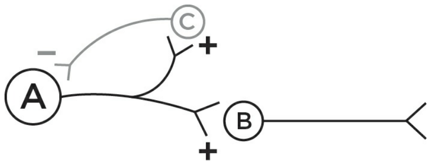
Việc làm sắc nét tín hiệu theo thời gian như vậy có thể được thực hiện theo một cách khác:
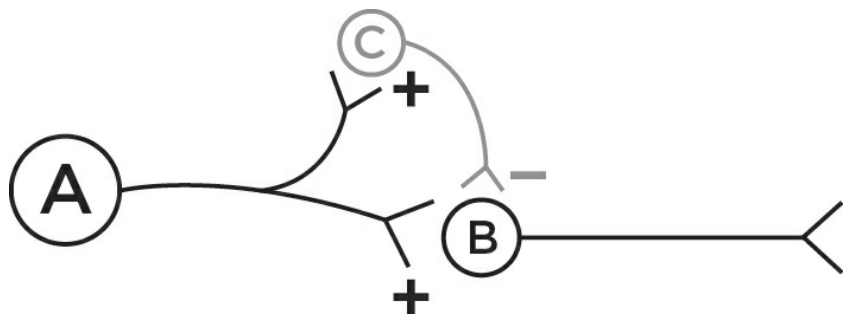
Neuron A kích thích B và C. Neuron C gửi một tín hiệu ức chế tới neuron B, tín hiệu này sẽ đến một lúc sau khi B bắt đầu bị kích thích (vì vòng A/C/B gồm hai bước synapse, so với một bước của A/B). Kết quả? Làm sắc nét tín hiệu bằng “ức chế tiến tới” (feed-forward inhibition).
Giờ là một kiểu làm sắc nét tín hiệu khác, làm tăng tỷ lệ tín hiệu trên nhiễu. Hãy xem xét mạch sáu neuron này, trong đó neuron A kích thích B, C kích thích D, và E kích thích F:
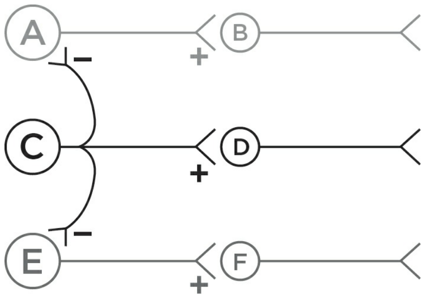
Vậy neuron C gửi một nhánh kích thích tới neuron D. Nhưng ngoài ra, sợi trục của neuron C còn gửi các nhánh bên ức chế tới các neuron A và E.* Do đó, nếu neuron C bị kích thích, nó vừa kích thích neuron D vừa làm câm lặng các neuron A và E. Với cơ chế “ức chế bên” (lateral inhibition) như vậy, C gào thét hết cỡ trong khi A và E trở nên đặc biệt im lặng. Đó là một phương thức làm sắc nét tín hiệu không gian (và lưu ý rằng sơ đồ đã được đơn giản hóa, ở chỗ tôi đã lược bỏ một điều hiển nhiên—các neuron A và E cũng gửi nhánh bên ức chế tới neuron C, cũng như tới các neuron ở phía bên kia của chúng trong mạng lưới tưởng tượng này).
Ức chế bên như thế này có mặt ở khắp mọi nơi trong các hệ thống giác quan. Chiếu một chấm sáng tí hon vào mắt. Khoan đã, vừa rồi là neuron thụ cảm ánh sáng A, C, hay E bị kích thích vậy? Nhờ có ức chế bên, rõ ràng hơn hẳn đó là C. Tương tự trong hệ thống xúc giác, cho phép bạn biết chính xác mẩu da này vừa bị chạm vào, chứ không phải lệch sang bên này hay bên kia một chút. Hoặc đôi tai cho bạn biết chắc chắn đó là nốt La, chứ không phải La thăng hay La giáng.*
Như vậy những gì chúng ta vừa thấy là một ví dụ khác về tăng cường độ tương phản trong hệ thần kinh. Ý nghĩa của việc trạng thái im lặng của một neuron mang điện tích âm, thay vì mức trung hòa 0 mV là gì? Đó là một cách làm sắc nét tín hiệu bên trong một neuron. Còn phản hồi, ức chế tiến tới và ức chế bên? Một cách làm sắc nét tín hiệu bên trong một mạch.
Hai loại đau khác nhau
Mạch tiếp theo này bao hàm một số yếu tố vừa được giới thiệu và giải thích tại sao, nhìn chung, có hai loại đau khác nhau. Tôi mê mạch này bởi vì nó quá đỗi tinh tế:
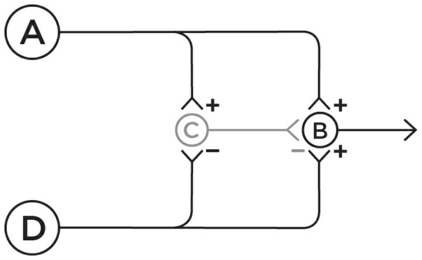
Sợi nhánh của neuron A nằm ngay dưới bề mặt da, và neuron này phát điện thế hoạt động để đáp ứng với một kích thích gây đau. Neuron A sau đó kích thích neuron B, vốn phóng chiếu lên tủy sống, báo cho bạn biết có thứ gì đó gây đau vừa xảy ra. Nhưng neuron A cũng kích thích neuron C, vốn ức chế B. Đây là một trong những mạch ức chế tiến tới của chúng ta. Kết quả? Neuron B phát xung trong chốc lát rồi bị làm im lặng, và bạn cảm nhận điều này như một cơn đau nhói—bạn vừa bị kim châm.
Trong khi đó, có neuron D, với các sợi nhánh nằm trong cùng khu vực chung đó của da và đáp ứng với một loại kích thích gây đau khác. Như trước, neuron D kích thích neuron B, và thông điệp được gửi lên não. Nhưng nó cũng gửi nhánh tới neuron C, nơi nó ức chế C. Kết quả? Khi neuron D được kích hoạt bởi một tín hiệu đau, nó ức chế khả năng ức chế neuron B của neuron C. Và bạn cảm nhận nó như một cơn đau nhức nhối, âm ỉ liên tục, giống như một vết bỏng hoặc vết trầy xước. Quan trọng hơn, điều này được củng cố thêm bởi thực tế là điện thế hoạt động truyền xuống sợi trục của neuron D chậm hơn nhiều so với ở neuron A (liên quan đến lớp myelin mà tôi đã đề cập trước đó—chi tiết không quan trọng). Vì vậy, cơn đau trong thế giới của neuron A không chỉ thoáng qua mà còn nhanh. Cơn đau ở nhánh neuron D không chỉ kéo dài lâu mà còn khởi phát chậm hơn.
Hai nhóm sợi này có thể tương tác với nhau, và chúng ta thường cố tình ép chúng làm vậy. Giả sử bạn có một cơn đau nhức nhối liên tục nào đó—chẳng hạn, một vết côn trùng cắn. Làm sao bạn có thể làm dịu cơn nhức nhối đó? Hãy kích thích ngắn sợi nhanh. Điều này làm tăng cơn đau lên trong một khoảnh khắc, nhưng bằng cách kích thích neuron C, bạn sẽ tắt hệ thống đó đi trong một lúc. Và đó chính xác là điều chúng ta thường làm trong những tình huống như vậy. Một vết côn trùng cắn nhức nhối không chịu nổi, chúng ta gãi mạnh ngay xung quanh nó để làm dịu cơn đau, và con đường đau mạn tính chậm chạp kia bị tắt đi trong tối đa vài phút.
Thực tế rằng cơn đau hoạt động theo cách này mang lại những hệ quả lâm sàng quan trọng. Một mặt, nó cho phép các nhà khoa học thiết kế các phương pháp điều trị cho những người mắc các hội chứng đau mạn tính nặng (ví dụ, một người bị chấn thương lưng nghiêm trọng). Cấy một điện cực nhỏ vào con đường đau nhanh và nối nó với một máy kích thích đeo ở hông bệnh nhân cho phép họ thỉnh thoảng phát xung vào con đường đó để tắt cơn đau mạn tính; cách này mang lại hiệu quả kỳ diệu trong nhiều trường hợp.
Như vậy chúng ta có một mạch bao gồm cơ chế làm sắc nét theo thời gian, giới thiệu phép phủ định kép của việc ức chế kẻ đi ức chế, và nhìn chung cực kỳ thú vị. Và một trong những lý do lớn nhất khiến tôi yêu thích nó là vì nó được đề xuất lần đầu tiên vào năm 1965 bởi hai nhà sinh học thần kinh vĩ đại Ronald Melzack và Patrick Wall. Nó chỉ được đề xuất như một mô hình lý thuyết—“Chưa ai từng nhìn thấy kiểu nối dây này cả, nhưng chúng tôi đề xuất rằng nó ắt hẳn phải trông giống như thế này, xét theo cách cơn đau vận hành.” Và các nghiên cứu sau đó đã chứng minh đó chính xác là cách phần này của hệ thần kinh được nối dây.
Là gã nào trong số đó?
Một mạch cuối cùng, hoàn toàn giả định. Giả sử chúng ta có một mạch gồm hai lớp neuron:
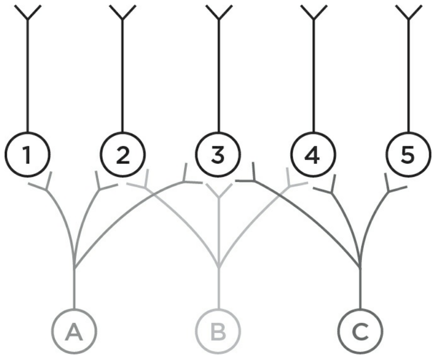
Neuron A phóng chiếu tới các neuron 1, 2 và 3; neuron B phóng chiếu tới 2, 3 và 4, v.v. Giờ hãy cho thấy mạch này mang tính giả định đến mức nào bằng cách gán cho các neuron A, B và C những chức năng hoàn toàn tưởng tượng. Neuron A đáp ứng với bức ảnh của gã bên trái, B với gã ở giữa, C với gã bên phải:
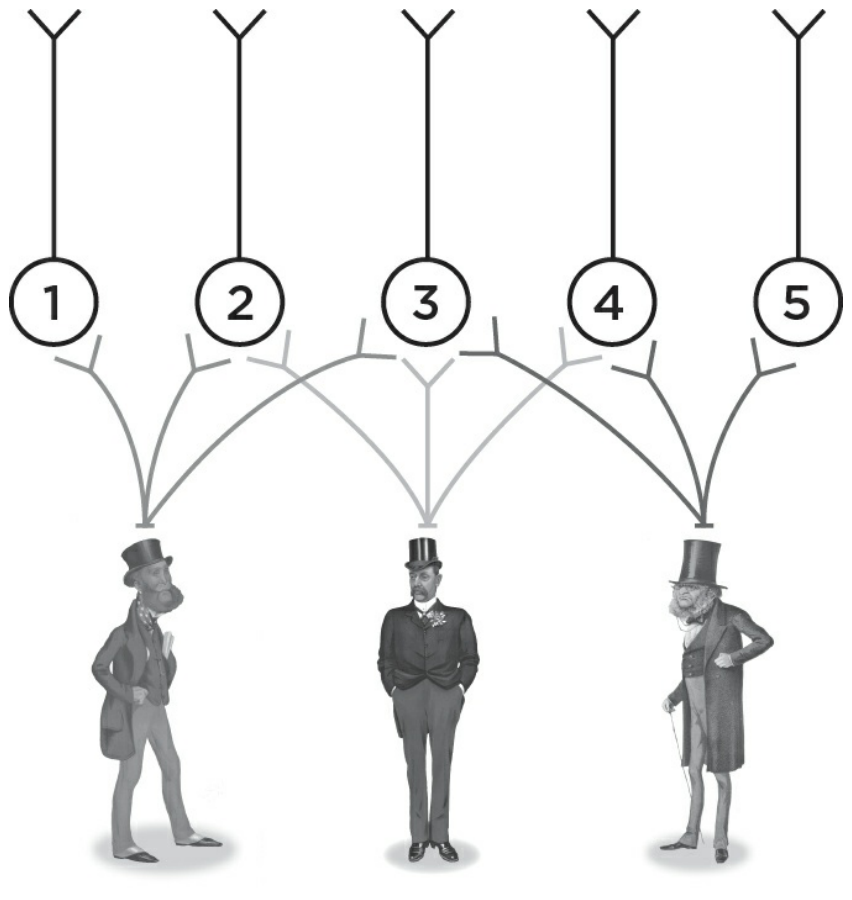
Neuron 1 có thể học được gì? Cách nhận diện gã cụ thể đó. Neuron 5 cũng chuyên biệt tương đương. Nhưng neuron 3 có thể học được gì? Cách các quý ông thời Victoria ăn mặc. Đó là neuron sẽ giúp bạn nhận ra quý ông thời Victoria trong bộ tứ dưới đây:
Tri thức của neuron 3 mang tính khái quát và đến từ sự chồng lấn của các nhánh phóng chiếu từ lớp thứ nhất. Các neuron 2 và 4 cũng là những neuron tổng quát, nhưng chúng kém chính xác hơn vì mỗi neuron chỉ có hai mẫu ví dụ.
Vậy neuron 3 nằm ở trung tâm hội tụ của mạng lưới này. Và những phần tinh vi nhất của não bộ được nối dây theo cách giống như mạch cổ tích này, nhưng ở quy mô khổng lồ—cùng lúc đó, neuron 3 lại là một thành tố ngoại vi hơn trong một mạch khác đang phóng chiếu tới nó (chẳng hạn, một mạch được vẽ vuông góc với trang giấy này), neuron 1 lại nằm ngay tại trung tâm của một mạng lưới khác trong chiều không gian thứ tư, v.v. Tất cả các neuron này đều được nhúng trong nhiều mạng lưới.
Điều này tạo ra cái gì? Năng lực liên tưởng, ẩn dụ, tương đồng, ngụ ngôn, biểu tượng. Khả năng liên kết hai thứ rời rạc, thậm chí từ các giác quan khác nhau. Để liên tưởng một cách đậm chất Homer rằng màu của rượu vang giống màu của biển cả, rằng cả “tomato” và “potato” đều có thể được phát âm theo hai cách khác nhau trong một bài hát, rằng một chiếc lưỡi đỏ tươi thè ra có thể gợi cho bạn nhớ đến âm nhạc của ban nhạc Stones. Đó là lý do tôi liên tưởng Stravinsky với Picasso, vì những đĩa nhạc (bạn còn nhớ thứ đó chứ?) của Stravinsky dường như luôn có một bức tranh của Picasso trên bìa. Và đó là lý do tại sao một mảnh vải hình chữ nhật với một họa tiết màu sắc đặc trưng trên đó có thể đại diện cho cả một quốc gia, một dân tộc hay một hệ tư tưởng.
Một điểm cuối cùng. Chúng ta khác nhau về bản chất và độ trải rộng của các mạng lưới liên tưởng. Và những thái cực của chúng đôi khi có thể tạo ra những điều rất thú vị. Chẳng hạn, phần lớn chúng ta từ sớm đã học cách liên tưởng một thứ trông na ná như hình sau đây với khái niệm “khuôn mặt”:
Nhưng rồi có ai đó xuất hiện với các mạng lưới liên tưởng từ những nhánh phóng chiếu neuron rộng lớn hơn, mang tính cá biệt hơn tất cả những người khác. Và họ dạy cho thế giới thấy rằng thứ này cũng có thể gợi lên tính chất khuôn mặt:
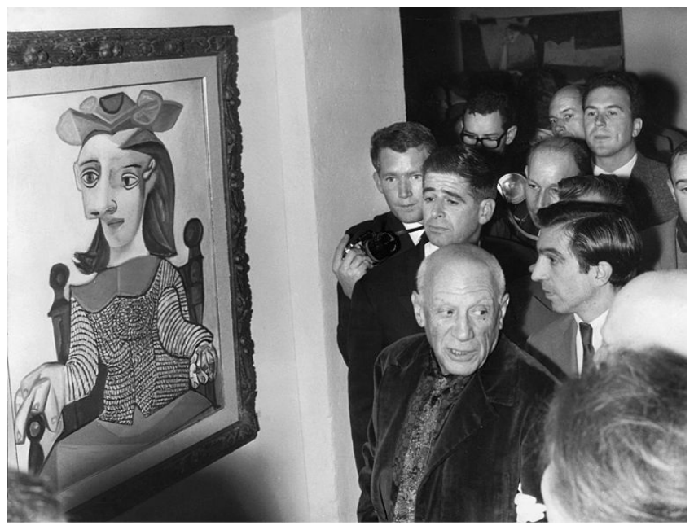
Chúng ta có thể gọi hệ quả của một số kiểu mạng lưới liên tưởng rộng bất thường của các neuron là gì? Sự sáng tạo.
Thêm một vòng nâng cấp quy mô nữa
Một neuron, hai neuron, một mạch neuron. Chúng ta giờ đã sẵn sàng, như bước cuối cùng, nâng cấp quy mô lên mức hàng nghìn neuron cùng một lúc.
Hãy xem xét lát cắt mô sau đây được quan sát dưới kính hiển vi:
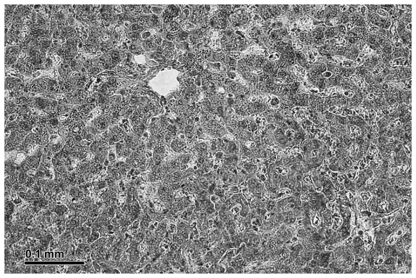
Đó là một cánh đồng tế bào đồng nhất, tất cả được sắp xếp gần như giống hệt nhau. Góc trên bên trái và góc dưới bên trái trông giống nhau y đúc.
Đây là mặt cắt ngang của gan; nếu bạn đã thấy một phần, bạn đã thấy tất cả. Chán ngắt.
Nếu não bộ cũng đồng nhất và chán ngắt thế này, nó sẽ chỉ là một khối mô không phân hóa, với thân tế bào neuron trải thảm đều đặn khắp nơi, phóng các nhánh của chúng đi lung tung mọi hướng. Thay vào đó, có một mức độ tổ chức nội tại khổng lồ:
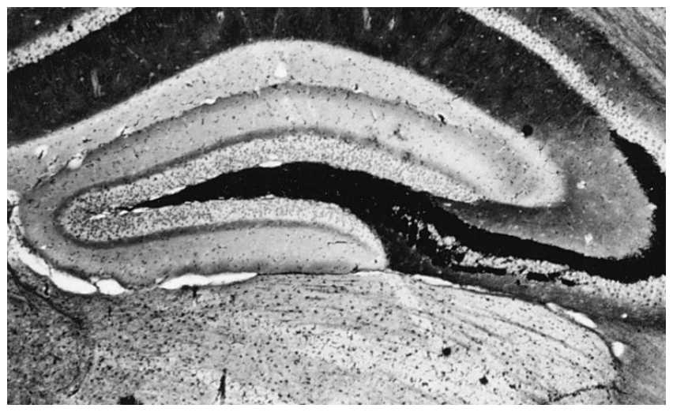
Nói cách khác, thân tế bào của các neuron có chức năng liên quan được tụm lại với nhau ở những vùng cụ thể của não bộ, và các sợi trục mà chúng gửi tới các phần khác của não bộ được tổ chức thành những bó cáp dẫn truyền. Điều cốt yếu mà tất cả những chuyện này có nghĩa là các phần khác nhau của não bộ làm những việc khác nhau. Tất cả các vùng của não đều có tên (thường dài nhiều âm tiết và bắt nguồn từ tiếng Hy Lạp hoặc Latin), các tiểu vùng cũng vậy, và các tiểu-tiểu vùng cũng vậy. Hơn nữa, mỗi vùng đều trò chuyện với một tập hợp nhất quán các vùng khác (tức là gửi sợi trục tới chúng) và được trò chuyện lại bởi một tập hợp nhất quán (tức là nhận các nhánh phóng chiếu sợi trục từ chúng).
Bạn có thể phát điên khi học tất cả những thứ này, như tôi đã từng chứng kiến, một cách bi thảm, ở trường hợp của nhiều nhà giải phẫu học thần kinh say mê từng chi tiết này. Đối với mục đích của chúng ta, có một vài điểm then chốt:
Mỗi vùng cụ thể chứa hàng triệu neuron. Một số cái tên quen thuộc ở cấp độ phân tích này: vùng dưới đồi (hypothalamus), tiểu não (cerebellum), vỏ não (cortex), hồi hải mã (hippocampus). Một số vùng có các tiểu vùng rất rõ rệt và cô đặc, và mỗi tiểu vùng được gọi là một “nhân” (nucleus). (Điều này khá dễ gây nhầm lẫn, vì phần chứa DNA của mỗi tế bào cũng được gọi là nhân. Biết làm sao được?) Một số cái tên có lẽ hoàn toàn xa lạ, chỉ lấy làm ví dụ: nhân nền
Meynert, nhân trên thị của vùng dưới đồi, nhân trám dưới với cái tên đầy duyên dáng. Như đã mô tả, thân tế bào của các neuron có chức năng liên quan được tụm lại với nhau trong vùng hoặc nhân cụ thể của chúng và phóng các nhánh sợi trục đi cùng một hướng, hòa vào nhau thành một sợi cáp (một “bó sợi thần kinh”). Đây là một ví dụ, lấy từ hồi hải mã:
Quay lại lớp vỏ bọc myelin quanh sợi trục giúp điện thế hoạt động lan truyền nhanh hơn. Myelin thường có màu trắng, đủ trắng để các bó cáp sợi trục trong não trông có màu trắng. Do đó chúng được gọi chung là “chất trắng”. Như có thể thấy, một phần lớn não bộ được chiếm giữ bởi các bó sợi thần kinh—đủ mọi vùng đang trò chuyện với nhau, thường là những phần ở rất xa nhau.* Giả sử bạn có một người vừa bị chấn thương ở một phần cụ thể nào đó của não, điểm X bí ẩn. Điều này
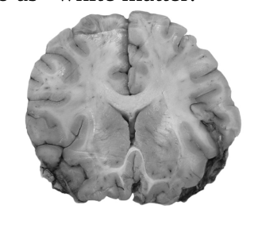
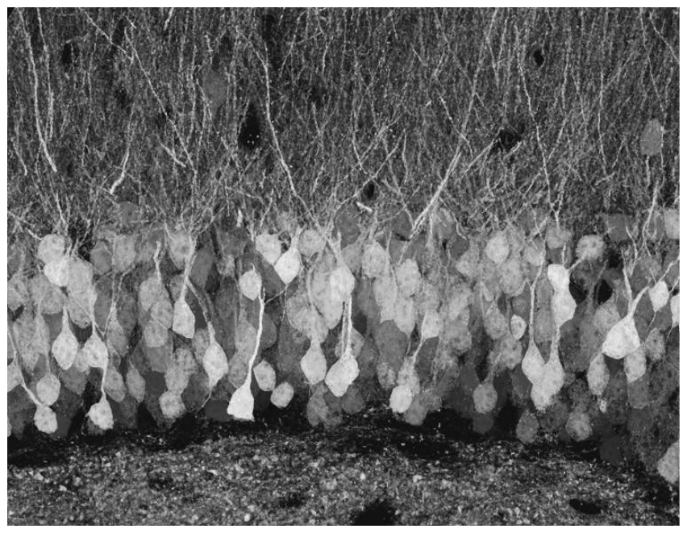
mang lại cơ hội tìm hiểu điều gì đó về não bộ bằng cách quan sát xem giờ đây chức năng nào không còn hoạt động bình thường ở người đó nữa. Khoa học thần kinh với tư cách là một lĩnh vực thực sự đã khởi đầu nhờ các nghiên cứu về những người lính bị “vết thương do đạn bắn xuyên qua”. Nhìn theo góc độ khách quan tách rời, những cuộc tắm máu quân sự triền miên ở châu Âu thế kỷ XIX quả là món quà của Chúa dành cho các nhà giải phẫu học thần kinh. Cá nhân bị thương giờ đây làm một việc gì đó một cách bất thường. Bạn có thể kết luận rằng điểm X là phần não chịu trách nhiệm cho phiên bản bình thường của hành vi đó không? Chỉ khi đó là nơi tập trung một cụm thân tế bào neuron. Nếu điểm X là một bó sợi thần kinh, bạn thực chất đang tìm hiểu về vùng não có các neuron gửi nhánh phóng chiếu sợi trục đi qua bó sợi đó, và vùng đó có thể nằm ở đầu bên kia của não bộ. Vì vậy điều quan trọng là phải phân biệt giữa “các nhân neuron” và “các sợi đi ngang qua”. Cuối cùng, quay lại câu chuyện vừa nhắc tới về một phần của não là trung tâm cho một hành vi nào đó. Các ví dụ từ đầu chương đã cho thấy thật khó để hiểu được chức năng của một neuron đơn lẻ nếu không xem xét mạng lưới mà nó là một phần. Cùng một chủ đề ở đây, nhưng ở quy mô lớn hơn. Xét việc mọi vùng não đều đang nhận các nhánh phóng chiếu từ và gửi các nhánh phóng chiếu tới hàng tỷ tỷ nơi khác, rất hiếm khi một vùng não đơn lẻ là “trung tâm cho” bất cứ thứ gì. Thay vào đó tất cả đều là các mạng lưới, nơi thường xuyên hơn nhiều, một vùng cụ thể “đóng vai trò then chốt trong”, “giúp điều hòa”, hoặc “ảnh hưởng đến” một hành vi. Chức năng của một vùng não cụ thể được nhúng trong bối cảnh của các kết nối của nó.
Vậy là phần nhập môn Não Bộ 101 của chúng ta khép lại tại đây.
Phụ lục 2
Những điều cơ bản về Nội tiết học
N
ội tiết học là ngành nghiên cứu về hormone, một loại sứ giả rất khác so với các chất dẫn truyền thần kinh ở chương 2. Nhắc lại một chút, chất dẫn truyền thần kinh được giải phóng từ tận cùng sợi trục của neuron để đáp ứng với các điện thế hoạt động. Sau khi được giải phóng, chúng đi qua một khoảng cách vi mô băng qua khe synapse và gắn vào các thụ thể trên sợi nhánh của neuron thứ hai, hậu synapse, từ đó làm thay đổi tính dễ kích thích của neuron đó.
Ngược lại, hormone là một sứ giả hóa học được giải phóng từ các tế bào tiết (bao gồm cả neuron) trong nhiều tuyến khác nhau. Một khi được tiết ra, nó đi vào dòng máu, nơi nó có thể tác động lên bất kỳ tế bào nào khắp cơ thể sở hữu thụ thể dành cho nó.* Vì vậy ngay lập tức chúng ta có những khác biệt then chốt. Thứ nhất, chất dẫn truyền thần kinh chỉ tác động trực tiếp lên các neuron ở phía bên kia của khớp thần kinh, trong khi một hormone có tiềm năng tác động lên từng tế bào trong hàng nghìn tỷ tế bào của cơ thể. Khác biệt thứ hai là khung thời gian; tín hiệu chất dẫn truyền thần kinh qua khớp thần kinh diễn ra trong vài phần nghìn giây. Ngược lại, nhiều tác động của hormone xuất hiện sau nhiều giờ đến nhiều ngày và có thể kéo dài mãi mãi (ví dụ, tuổi dậy thì có mấy khi biến mất sau một thời gian đâu?).
Chất dẫn truyền thần kinh và hormone cũng khác nhau về quy mô tác động. Một chất dẫn truyền thần kinh gắn vào thụ thể hậu synapse của nó, dẫn đến một sự thay đổi cục bộ trong dòng ion đi qua màng của gai sợi nhánh đó. Nhưng tùy thuộc vào loại hormone và tế bào đích đang được xem xét, hormone có thể làm thay đổi hoạt tính của các protein cụ thể, bật hoặc tắt một số gen nhất định, làm biến đổi quá trình chuyển hóa của tế bào, khiến chúng phát triển hoặc teo đi, phân chia hoặc héo hon rồi chết. Ví dụ, testosterone làm tăng khối lượng cơ bắp, và progesterone gây ra sự tăng sinh tế bào trong tử cung, khiến nó dày lên trong pha hoàng thể. Ngược lại, hormone tuyến giáp giết chết các tế bào ở đuôi nòng nọc khi con vật đang biến thái thành ếch, và một nhóm hormone căng thẳng có thể giết chết các tế bào trong hệ miễn dịch (giúp giải thích tại sao căng thẳng khiến chúng ta dễ bị cảm lạnh). Hormone cực kỳ đa năng.
Phần lớn các hormone là một phần của một “trục thần kinh – nội tiết”. Hãy nhớ lại từ chương 2 việc mọi con đường trong hệ limbic đều dẫn về vùng dưới đồi, với vai trò then chốt trong việc điều hòa hệ thần kinh tự chủ và các hệ thống hormone. Đây là lúc phần thứ hai đó bước vào. Các neuron ở vùng dưới đồi tiết ra một loại hormone cụ thể di chuyển trong một hệ tuần hoàn cục bộ tí hon nối với tuyến yên, nằm ngay dưới đáy não. Tại đó hormone này kích thích sự tiết một loại hormone tuyến yên cụ thể, chất này đi vào vòng tuần hoàn chung và kích thích sự tiết một loại hormone thứ ba từ một tuyến ngoại biên nào đó. Đây là một ví dụ liên quan đến ba loại hormone yêu thích của tôi: trong lúc căng thẳng, các neuron vùng dưới đồi tiết ra CRH (hormone giải phóng corticotropin), kích thích các tế bào tuyến yên tiết ra ACTH (hormone kích thích vỏ thượng thận). Một khi đã vào vòng tuần hoàn chung, ACTH đi tới tuyến thượng thận, nơi nó kích thích tiết các hormone căng thẳng steroid gọi là glucocorticoid (với phiên bản ở người là cortisol, hay còn gọi là hydrocortisone). Các hormone khác (ví dụ: estrogen, progesterone, testosterone, và hormone tuyến giáp) được giải phóng từ các tuyến ngoại biên như bước cuối cùng của “trục vùng dưới đồi/tuyến yên/tuyến ngoại biên” của riêng chúng.* Như một sự phức tạp tuyệt vời, việc tiết mỗi loại hormone tuyến yên cụ thể thường không chỉ nằm dưới sự kiểm soát của một hormone giải phóng vùng dưới đồi duy nhất. Thay vào đó có nhiều loại hormone đảm nhiệm chức năng đó, và những hormone vùng dưới đồi khác lại ức chế sự giải phóng hormone tuyến yên cụ thể đó. Ví dụ, cả một loạt hormone vùng dưới đồi bên cạnh CRH cùng điều hòa sự giải phóng ACTH, trong đó các tác nhân gây căng thẳng khác nhau tạo ra những tổ hợp khác nhau của các hormone vùng dưới đồi đó.
Không phải tất cả các hormone đều được điều hòa theo kiểu não/tuyến yên/tuyến ngoại biên này. Trong một số trường hợp chỉ có hai bước não/tuyến yên, nơi hormone tuyến yên phát huy tác dụng khắp cơ thể; hormone tăng trưởng nhìn chung tuân theo khuôn mẫu này. Ở các hệ thống khác, não gửi các nhánh phóng chiếu xuống tủy sống và tới một tuyến cụ thể, giúp điều hòa việc giải phóng hormone của nó; tuyến tụy và sự tiết insulin là một ví dụ (trong đó nồng độ glucose tuần hoàn là yếu tố điều hòa chính). Rồi còn có những hormone kỳ quặc được tiết ra từ những nơi không ngờ tới như tim hoặc ruột, nơi não bộ chỉ điều hòa sự tiết một cách gián tiếp.
Hormone, giống như chất dẫn truyền thần kinh, được sản xuất rất rẻ. Chúng được tạo thành chỉ qua vài bước sinh tổng hợp từ các tiền chất dồi dào—hoặc là các protein đơn giản hoặc là cholesterol.* Hơn nữa, cơ thể tạo ra nhiều loại hormone từ cùng một tiền chất. Ví dụ, vô số loại hormone steroid đều được tạo ra từ cholesterol.
Cho đến nay chúng ta mới lướt qua các thụ thể hormone. Chúng làm công việc chung giống như các thụ thể chất dẫn truyền thần kinh; có một phân tử thụ thể đặc trưng cho từng loại hormone,* với một vùng gắn kết lõm có hình dạng bổ sung với hình dạng của hormone. Để lôi lại chính cái sáo ngữ từng dùng cho chất dẫn truyền thần kinh, một hormone khớp vào thụ thể của nó giống như chìa khóa tra vào ổ khóa. Và cũng như với thụ thể chất dẫn truyền thần kinh, chẳng có bữa trưa nào miễn phí với thụ thể hormone cả. Các hormone steroid khác nhau có cấu trúc tương tự nhau. Do đó, nếu bạn tiết kiệm ở khâu sản xuất, bạn cần những thụ thể tinh tế, xịn xò để phân biệt giữa các hormone tương tự nhau đó—bạn không muốn các thụ thể nhầm lẫn, chẳng hạn, giữa estrogen và testosterone.
Những điểm tương đồng giữa hormone và chất dẫn truyền thần kinh vẫn tiếp tục. Giống như thụ thể chất dẫn truyền thần kinh, “ái lực” (avidity) của thụ thể hormone đối với hormone của nó có thể thay đổi. Điều này có nghĩa là hình dạng của vị trí gắn kết thay đổi một chút, khiến hormone giờ đây khớp chặt hơn hoặc lỏng hơn, từ đó làm tăng hoặc giảm thời gian tác động của hormone. Số lượng thụ thể cho một hormone cụ thể trong tế bào cũng có thể thay đổi, làm biến đổi độ nhạy của tế bào đối với tác động của hormone đó. Số lượng thụ thể ở tế bào đích có thể quan trọng ngang ngửa với bản thân nồng độ hormone, và có những bệnh nội tiết mà nồng độ bình thường của một hormone vẫn được tiết ra nhưng, vì một đột biến ở thụ thể của hormone đó, chẳng có tín hiệu nào lọt qua được. Nồng độ hormone giống như việc ai đó nói to đến mức nào. Số lượng thụ thể giống như độ thính nhạy mà đôi tai thu nhận giọng nói đó.
Cuối cùng, thụ thể cho một hormone thường chỉ xuất hiện ở một nhóm nhỏ các tế bào và mô trong cơ thể, nghĩa là chỉ những nơi đó mới đáp ứng với hormone. Ví dụ, chỉ có tế bào đuôi mới chứa thụ thể cho hormone tuyến giáp khi nòng nọc biến thành ếch. Tương tự, chỉ một số loại ung thư vú liên quan đến các khối u mà tế bào của chúng “dương tính với ER”—tức là chúng chứa thụ thể estrogen và đáp ứng với các tác động thúc đẩy tăng trưởng của hormone này.
Đây là tổng quan của chúng ta về cách hormone làm thay đổi chức năng của các tế bào đích trong khoảng thời gian từ nhiều giờ đến nhiều ngày. Hormone rất liên quan ở chương 7 khi xem xét tác động của hormone trong thời thơ ấu và đời sống thai nhi. Cụ thể, hormone có thể có những tác động “tổ chức” (organizational) vĩnh viễn trong quá trình phát triển, định hình cách não bộ được xây dựng. Ngược lại, các tác động “kích hoạt” (activational) kéo dài từ nhiều giờ đến nhiều ngày. Hai lĩnh vực này tương tác với nhau, ở chỗ các tác động tổ chức của hormone lên não thai nhi ảnh hưởng đến những tác động kích hoạt mà hormone sẽ gây ra trên bộ não đó ở tuổi trưởng thành.
Quay lại văn bản chính để xem xét các hormone cụ thể.
Phụ lục 3
Kiến thức cơ bản về Protein
P
rotein là một nhóm hợp chất hữu cơ vốn là những phân tử dồi dào nhất trong các hệ thống sống. Chúng cực kỳ quan trọng, vì vô số hormone, chất dẫn truyền thần kinh và các sứ giả của hệ miễn dịch được làm từ protein; tương tự với các thụ thể đáp ứng với những sứ giả đó, các enzyme xây dựng hoặc phân hủy chúng,* bộ khung giàn giáo định hình tế bào, v.v.
Một đặc điểm then chốt của protein là hình dạng của chúng, vì hình dạng của một protein quyết định chức năng của nó. Các protein tạo nên bộ khung giàn giáo của tế bào có hình dạng của những thanh giằng khác nhau trong giàn giáo ở công trường xây dựng (đại loại thế). Một hormone protein sẽ có một hình dạng đặc trưng độc nhất và khác biệt rõ rệt với hình dạng của một hormone có tác dụng khác.* Và một thụ thể protein phải có hình dạng bổ sung cho hình dạng của hormone hoặc chất dẫn truyền thần kinh mà nó gắn kết (quay lại sáo ngữ lâu đời của phụ lục 1, rằng một sứ giả như hormone khớp vào thụ thể của nó giống như chìa khóa tra vào ổ khóa).
Một số protein thay đổi hình dạng của chúng, thường chuyển đổi qua lại giữa hai cấu hình. Giả sử bạn có một enzyme (một lần nữa, là một protein) tổng hợp một phân tử đường sucrose bằng cách nối một phân tử glucose với một phân tử fructose. Enzyme đó phải có một cấu hình giống chữ V, trong đó một đầu gắn phân tử glucose ở một góc độ cụ thể, đầu kia gắn fructose. Việc gắn cả hai phân tử kích hoạt enzyme chuyển sang cấu hình kia của nó, nơi hai đầu chữ V xích lại đủ gần để glucose và fructose được nối với nhau. Phân tử sucrose trôi đi, và enzyme lật trở lại cấu hình ban đầu.
Điều gì quyết định hình dạng và chức năng của một protein? Bất kỳ protein nào cũng được tạo thành từ một chuỗi các axit amin. Có khoảng 20 loại axit amin khác nhau—bao gồm một số cái tên quen thuộc như tryptophan và glutamate. Chuỗi axit amin của mỗi protein là độc nhất—giống như chuỗi chữ cái cấu thành một từ. Một protein điển hình dài khoảng 300 axit amin, và với 20 loại axit amin khác nhau, có gần 10^400 trình tự khả dĩ (tức là số mười theo sau bởi bốn trăm số không)—nhiều hơn cả số nguyên tử trong vũ trụ.* Trình tự axit amin của một protein ảnh hưởng đến (các) hình dạng độc nhất của protein đó. Tín điều trước đây từng cho rằng trình tự axit amin quyết định (các) hình dạng của protein đó, nhưng hóa ra hình dạng còn bị thay đổi tinh vi bởi những thứ như nhiệt độ và độ axit—nói cách khác, các ảnh hưởng từ môi trường.
Và điều gì quyết định trình tự các axit amin được xâu chuỗi lại để tạo thành một protein cụ thể? Một gen cụ thể.
DNA NHƯ BẢN THIẾT KẾ ĐỂ XÂY DỰNG PROTEIN
DNA là một nhóm hợp chất hữu cơ khác, và cũng giống như có khoảng 20 loại axit amin khác nhau, có 4 “chữ cái” khác nhau (gọi là nucleotide) cấu thành nên DNA. Một trình tự gồm 3 nucleotide (gọi là một bộ ba mã hóa - codon) mã hóa cho một axit amin đơn lẻ. Nếu có 4 loại nucleotide khác nhau, và mỗi codon dài 3 nucleotide, có thể có tổng cộng 64 codon khác nhau (4 khả năng ở vị trí thứ nhất × 4 ở vị trí thứ hai × 4 ở vị trí thứ ba = 64). Một vài trong số 64 codon đó được dành riêng để báo hiệu điểm kết thúc của một gen, và sau khi loại bỏ các “codon kết thúc” đó, còn lại 61 codon khác nhau mã hóa cho 20 axit amin khác nhau. Do đó, có sự “dư thừa” (redundancy)—hầu như mọi axit amin đều có thể được chỉ định bởi nhiều hơn một codon độc nhất (trung bình khoảng 3, tức là 61/20). Thông thường, các codon khác nhau cùng mã hóa cho một axit amin chỉ khác nhau ở một nucleotide duy nhất. Ví dụ, bốn trình tự codon khác nhau cùng mã hóa cho axit amin alanine: GCA, GCC, GCG, và GCT (A, C, G, và T là chữ viết tắt của bốn loại nucleotide).* Sự dư thừa sẽ rất quan trọng để hiểu về sự tiến hóa của gen.
Toàn bộ đoạn nucleotide mã hóa cho một loại protein đơn lẻ được gọi là một gen. Toàn bộ tập hợp DNA được gọi là bộ gen (genome), mã hóa cho tất cả hàng chục nghìn gen trong một sinh vật; “giải trình tự” bộ gen có nghĩa là xác định trình tự độc nhất của hàng tỷ nucleotide cấu thành bộ gen của sinh vật đó. Đoạn DNA đó dài đến mức (chứa khoảng hai mươi nghìn gen ở người) phải được chia thành các tập sách riêng biệt, gọi là nhiễm sắc thể.
Điều này tạo ra một vấn đề về không gian. Thư viện DNA nằm ở trung tâm tế bào, trong nhân tế bào. Tuy nhiên, protein lại hiện diện khắp tế bào, được chế tạo ở khắp nơi trong tế bào (hãy thử nghĩ đến các protein ở tận cùng sợi trục của một neuron tủy sống ở cá voi xanh, những tận cùng cách nhân của neuron đó hàng năm ánh sáng). Làm thế nào để đưa thông tin DNA ra ngoài đến nơi protein được tạo ra? Có một chất trung gian hoàn thiện bức tranh. Trình tự nucleotide độc nhất trong DNA mã hóa cho một gen cụ thể được sao chép thành một chuỗi các chữ cái nucleotide tương tự trong một hợp chất liên quan gọi là RNA. Bất kỳ nhiễm sắc thể nào cũng chứa một đoạn DNA dài đến choáng váng, mã hóa hết gen này đến gen khác; ngược lại, đoạn RNA này chỉ dài đúng bằng gen cụ thể đó. Nói cách khác, một độ dài dễ quản lý hơn nhiều. Đoạn RNA đó sau đó được vận chuyển đến bất cứ nơi nào nó cần đến trong tế bào, nơi nó chỉ đạo xem các axit amin nào được xâu chuỗi lại theo trình tự nào để tạo thành một protein (và luôn có các axit amin trôi nổi xung quanh trong tế bào, sẵn sàng được chộp lấy cho dự án chế tạo protein). Hãy nghĩ về RNA như một bản photocopy của một trang đơn lẻ từ bộ bách khoa toàn thư DNA dài hai mươi nghìn trang đồ sộ này. (Và nhiều bản sao của protein tương ứng có thể được tạo ra từ hướng dẫn trên một trang photocopy RNA. Điều này chắc chắn giúp ích trong những tình huống mà các bản sao của protein phải tới được từng tận cùng trong hàng nghìn tận cùng sợi trục của một neuron đơn lẻ.)
Điều này tạo ra cái được gọi là “tín điều trung tâm” của sự sống, một khái niệm được Francis Crick định hình lần đầu vào đầu thập niên 1960, một nửa của cặp đôi lừng danh Watson và Crick, những người đã phát hiện ra cấu trúc “xoắn kép” của DNA (với không ít sự giúp sức bị đánh cắp từ Rosalind Franklin, nhưng đó là một câu chuyện khác). Tín điều trung tâm của Crick khẳng định rằng trình tự nucleotide của DNA cấu thành một gen quyết định cách một đoạn RNA độc nhất được lắp ghép . . . điều này quyết định cách một chuỗi axit amin độc nhất được lắp ghép . . . điều này quyết định (các) hình dạng của protein kết quả . . . điều này quyết định chức năng của protein đó. DNA quyết định RNA quyết định protein.* Và hàm ẩn trong tín điều trung tâm đó là một điểm cốt yếu khác: một loại gen quy định một loại protein.
Chỉ để giữ cho mọi người khỏi phát điên, tôi sẽ chủ yếu bỏ qua RNA. Đối với mục đích của chúng ta, điều thú vị là gen—điểm khởi đầu—có liên quan gì đến sản phẩm cuối cùng của chúng—protein và các chức năng của chúng.
ĐỘT BIẾN VÀ ĐA HÌNH
Gen được di truyền từ cha mẹ bạn (một nửa số gen từ mỗi người [không hoàn toàn đúng, như đã đề cập trong văn bản chính]). Giả sử rằng khi bộ gen DNA của ai đó đang được sao chép để đưa vào trứng hoặc tinh trùng của họ, một sai sót xảy ra trong quá trình sao chép một nucleotide đơn lẻ; với hàng tỷ nucleotide, chuyện đó thỉnh thoảng ắt phải xảy ra. Kết quả là, trừ khi được sửa chữa, gen đó, lúc này có trình tự nucleotide bị sai khác ở một điểm, được truyền lại cho đời con. Đây là một đột biến.
Trong di truyền học cổ điển có ba loại đột biến có thể xảy ra. Loại đầu tiên gọi là đột biến điểm. Một nucleotide đơn lẻ bị sao chép sai. Liệu điều này có làm thay đổi trình tự axit amin của protein được mã hóa không? Tùy thuộc. Quay lại sự dư thừa trong mã DNA, từ vài đoạn trước. Giả sử có một codon trong một gen mang trình tự GCT, mã hóa cho alanine. Nhưng đã có một đột biến xảy ra, tạo ra GCA thay thế. Không vấn đề gì—nó vẫn mã hóa cho alanine. Đó là một đột biến “trung tính”, vô thưởng vô phạt. Nhưng giả sử đột biến thay vào đó lại là GAT. Nó mã hóa cho một axit amin hoàn toàn khác gọi là asparagine. Ôi thôi.
Tuy nhiên, trên thực tế, chuyện này có thể không phải vấn đề lớn, nếu axit amin mới trông rất giống với axit amin bị mất. Giả sử bạn có một trình tự nucleotide mã hóa cho chuỗi axit amin ẩn dụ sau đây:
“Tôi/đang/chuẩn/bị/làm/điều/sau/đây” Nhờ một đột biến tinh tế, có sự thay đổi của một axit amin, nhưng không gây ra hàng tấn hậu quả:
“Tôi/đang/chuẩn/bị/lồm/điều/sau/đây”
Câu này vẫn dễ hiểu đối với hầu hết mọi người; protein chỉ đơn giản bị coi là nói giọng địa phương một chút. Dịch sang tiếng protein, protein có hình dạng hơi khác một chút và làm công việc thường ngày của nó hơi khác đi một chút (có thể chậm hơn hoặc nhanh hơn một tí). Chưa phải tận thế.
Nhưng nếu đột biến mã hóa cho một axit amin tạo ra một protein có hình dạng khác biệt hoàn toàn, hậu quả có thể vô cùng to lớn (thậm chí gây chết người).
Quay lại “Tôi/đang/chuẩn/bị/làm/điều/sau/đây” Chuyện gì xảy ra nếu có một đột biến ở một nucleotide giúp mã hóa cho chữ l đầu tiên, một đột biến gây hậu quả lớn?
“Tôi/đang/chuẩn/bị/cấm/điều/sau/đây” Rắc rối to. Loại đột biến cổ điển tiếp theo được gọi là đột biến mất đoạn (deletion mutation). Trong kịch bản này, một lỗi sao chép xảy ra trong quá trình di truyền một gen. Nhưng thay vì một nucleotide bị sao chép nhầm, nó bị xóa mất. Ví dụ, trong trường hợp nucleotide thứ bảy bị xóa mất,
“I/am/now/going/to/do/the/following” biến thành “I/am/now/oingt/od/ot/hef/ollowing” Điều này có thể làm dịch khung đọc toàn bộ đoạn sau để tạo ra thứ vô nghĩa, hoặc thậm chí một thông điệp khác hẳn (ví dụ: “Cho món tráng miệng tôi muốn món bánh kem mousse” đột biến thành “Cho món tráng miệng tôi muốn con chuột mouse”).
Đột biến mất đoạn có thể liên quan đến việc mất nhiều hơn một nucleotide đơn lẻ. Ở mức cực đoan, điều này có thể liên quan đến việc xóa bỏ toàn bộ gen, hoặc thậm chí cả một đoạn gồm nhiều gen trên một nhiễm sắc thể cụ thể. Chắc chắn là không tốt chút nào.
Cuối cùng, có đột biến thêm đoạn (insertion mutation). Trong quá trình sao chép DNA để truyền cho thế hệ tiếp theo, một nucleotide vô tình bị sao chép hai lần, bị nhân đôi. Do đó:
“I/am/now/going/to/do/the/following” biến thành “I/am/now/ggoin/gt/od/oth/efollowin” Vô nghĩa, hoặc có lẽ là một thông điệp khác, như trong trường hợp sau, khi một chữ e được chèn vào gần cuối chuỗi chữ cái: “Mary từ chối lời hẹn hò của John vì cô không thích đi tiêu (boweling thay vì bowling).” Trong một số trường hợp, đột biến thêm đoạn có thể liên quan đến việc chèn nhiều hơn một nucleotide đơn lẻ. Ở mức cực đoan, điều này thậm chí có thể liên quan đến việc nhân đôi toàn bộ một gen.
Đột biến điểm, mất đoạn và thêm đoạn là phần lớn những gì đột biến đề cập đến.* Đột biến mất đoạn và thêm đoạn thường gây ra những hậu quả lớn, thường là có hại, nhưng đôi khi lại tạo ra một protein mới thú vị.
Quay lại với đột biến điểm. Hãy xem xét một đột biến dẫn đến sự thay thế một axit amin đơn lẻ trong protein, một axit amin hoạt động hơi khác so với axit amin chuẩn. Như đã lưu ý ở trên, kết quả là protein vẫn làm công việc cũ của nó, nhưng có lẽ làm nhanh hơn hoặc chậm hơn một chút. Đây có thể là nguyên liệu cho sự thay đổi tiến hóa—nếu phiên bản mới bất lợi, làm giảm thành công sinh sản của bất kỳ ai mang nó, nó sẽ dần bị chọn lọc đào thải, loại bỏ khỏi quần thể. Nếu thay vào đó phiên bản mới có lợi hơn, nó sẽ dần thay thế phiên bản cũ trong quần thể. Hoặc nếu phiên bản mới hoạt động tốt hơn bản gốc trong một số hoàn cảnh nhưng tệ hơn trong những hoàn cảnh khác, nó có thể đạt trạng thái cân bằng trong quần thể cùng với phiên bản gốc, trong đó một tỷ lệ phần trăm nhất định người mang phiên bản cũ, phần còn lại mang phiên bản mới. Trong trường hợp này, gen cụ thể đó sẽ được mô tả là tồn tại ở hai dạng hoặc biến thể khác nhau, có hai “alen” khác nhau. Hầu hết các gen đều có nhiều alen. Và kết quả là sự biến thiên cá nhân trong chức năng của các gen (điều này được đề cập phức tạp hơn nhiều trong chương 8).
Cuối cùng, một sự làm rõ về nỗi nhầm lẫn nơi hai câu nói cửa miệng về di truyền học va vào nhau. Câu thứ nhất là, xét trên trung bình, anh chị em ruột (không phải sinh đôi cùng trứng) chia sẻ 50 phần trăm số gen của họ.* Câu kia là chúng ta chia sẻ 98 phần trăm số gen của mình với tinh tinh. Vậy chúng ta có họ hàng gần với tinh tinh hơn là với anh chị em ruột của mình sao? Không. So sánh giữa người và tinh tinh là nói về các loại tính trạng—cả hai chúng ta đều có gen mã hóa cho các tính trạng liên quan đến việc có, chẳng hạn, mắt, sợi cơ, hoặc thụ thể dopamine, và cả hai đều thiếu gen liên quan đến việc có, chẳng hạn, mang cá, râu côn trùng, hoặc cánh hoa. Vì vậy có 98 phần trăm chồng lấn ở cấp độ so sánh đó. Nhưng so sánh giữa bất kỳ hai con người nào là nói về các phiên bản của những tính trạng đó—cả hai đều có một gen mã hóa cho, chẳng hạn, thứ gọi là màu mắt, nhưng họ có chia sẻ cùng phiên bản mã hóa cho cùng một màu mắt cụ thể đó không? Tương tự cho nhóm máu, loại thụ thể dopamine, v.v. Chúng ta có 50 phần trăm chồng lấn với anh chị em ruột ở cấp độ so sánh này.
Bảng chú giải các từ viết tắt
ACC vỏ não đai trước
ACTH hormone kích thích vỏ thượng thận
ADHD rối loạn tăng động giảm chú ý
AIS hội chứng kháng androgen
APA Hiệp hội Tâm lý học Hoa Kỳ
ASD rối loạn phổ tự kỷ
BDNF yếu tố dinh dưỡng thần kinh có nguồn gốc từ não
BLA hạch hạnh nhân đáy bên
BMI chỉ số khối cơ thể
BNST nhân giường của vân tận cùng
CAH tăng sản thượng thận bẩm sinh
CBT liệu pháp nhận thức – hành vi
COMT catechol-O-methyltransferase
CRH hormone giải phóng corticotropin
DAT chất vận chuyển dopamine
DHEA dehydroepiandrosterone
dlPFC vỏ não trước trán lưng bên
DZ dị hợp tử (sinh đôi khác trứng)
EEA giả định môi trường bình đẳng
EEG điện não đồ (thuộc điện não); EEGs các bản ghi điện não đồ
ERPS điện thế liên quan đến sự kiện
fMRI chụp cộng hưởng từ chức năng
FTD sa sút trí tuệ trán thái dương
GABA axit gamma-aminobutyric
GnRH hormone giải phóng gonadotropin
GSR điện trở da điện hóa
GWAS nghiên cứu liên kết toàn bộ gen
HG người săn bắt hái lượm
HH ấm áp cao/năng lực cao
HL ấm áp cao/năng lực thấp
IAT Bài kiểm tra Liên tưởng Ngầm
LH ấm áp thấp/năng lực cao
LH hormone tạo hoàng thể
LL ấm áp thấp/năng lực thấp
LTD ức chế dài hạn
LTP tăng cường dài hạn
MAO-A monoamine oxidase-A
MHC phức hợp hòa hợp mô chính
MZ đồng hợp tử (sinh đôi cùng trứng)
NCAM phân tử kết dính tế bào thần kinh
PAG chất xám quanh cống não
PD Thế tiến thoái lưỡng nan của người tù
PFC vỏ não trước trán
PMC vỏ não tiền vận động
PMDD rối loạn khí sắc tiền kinh nguyệt
PMS hội chứng tiền kinh nguyệt
PNS hệ thần kinh phó giao cảm
PTSD rối loạn căng thẳng sau sang chấn
PVN nhân cạnh não thất
RNA axit ribonucleic
RWA chủ nghĩa độc đoán cánh hữu
SDO định hướng thống trị xã hội
SES địa vị kinh tế xã hội
SHRP giai đoạn giảm đáp ứng căng thẳng
SNPs đa hình đơn nucleotide
SNS hệ thần kinh giao cảm
SPE Thí nghiệm Nhà tù Stanford
SSRI chất ức chế tái hấp thu serotonin có chọn lọc
STG hồi thái dương trên
TF yếu tố phiên mã
TH tryptophan hydroxylase
ToM Lý thuyết Tâm trí
TPJ vùng tiếp giáp thái dương – đỉnh
TRC ủy ban sự thật và hòa giải
vlPFC vỏ não trước trán bụng bên vmPFC vỏ não trước trán bụng giữa 54
Các từ viết tắt trong phần Chú thích
Để tiết kiệm cả rừng giấy, các tài liệu tham khảo chỉ trích dẫn một hoặc hai tác giả đầu tiên. Các từ viết tắt sau đây được sử dụng cho toàn bộ tên tạp chí hoặc các từ bên trong tên tạp chí:
AEL: Applied Economics Letters. AGP: Archives of General Psychiatry. Am: American. AMFP: American Journal of Forensic Psychology. Ann: Annual. ANYAS: Annals of the New York Academy of Sciences. Arch: Archives of. ARSR: Annual Review of Sex Research. BBR: Behavioral Brain Research. BBS: Behavioral and Brain Sciences. Behav: Behavior hoặc Behavioral. Biol: Biology hoặc Biological. Biol Lett: Biology Letters. BP: Biological Psychiatry. Brit: British. Bull: Bulletin. Clin: Clinical. Cog: Cognitive hoặc Cognition. Comp: Comparative. Curr: Current. Dir: Directions in. EHB: Evolution and Human Behavior. Endo: Endocrinology. Evol: Evolution. Eur: European. Exp: Experimental. Front: Frontiers in. Horm Behav: Hormones and Behavior. Hum: Human. Int: International. J: Journal hoặc Journal of. JAMA: Journal of the American Medical Association. JCP: Journal of Comparative Psychology. JEP: Journal of Economic Psychology. JESP: Journal of Experimental and Social Psychology. JPET: Journal of Pharmacology and Experimental Therapeutics. JPSP: Journal of Personality and Social Psychology. JSS: Journal of Sports Sciences. Med: Medical hoặc Medicine. Mol: Molecular. Nat: Nature. NEJM: New England Journal of Medicine. Neurobiol: Neurobiology. Neurol: Neurology. Nsci: Neuroscience hoặc Neurosciences. Nsci Biobehav Rev: Neuroscience and Biobehavioral Reviews. PLoS: Public Library of Science. PNAS: Proceedings of the National Academy of Science, USA. PNE: Psychoneuroendocrinology. Primat: Primatology. Proc: Proceedings of the. Prog: Progress in. PSPB: Personality and Social Psychology Bulletin. PSPR: Personality and Social Psychology Review. Psych: Psychology hoặc Psychological. Rep: Report hoặc Reports. Res: Research. Rev: Review hoặc Reviews. SCAN: Social, Cognitive and Affective Neuroscience. Sci: Science hoặc Sciences. Sci Am: Scientific American. Soc: Society hoặc Social. TICS: Trends in Cognitive Sciences. TIEE: Trends in Ecology and Evolution. TIGS: Trends in Genetic Sciences. TINS: Trends in Neuroscience.